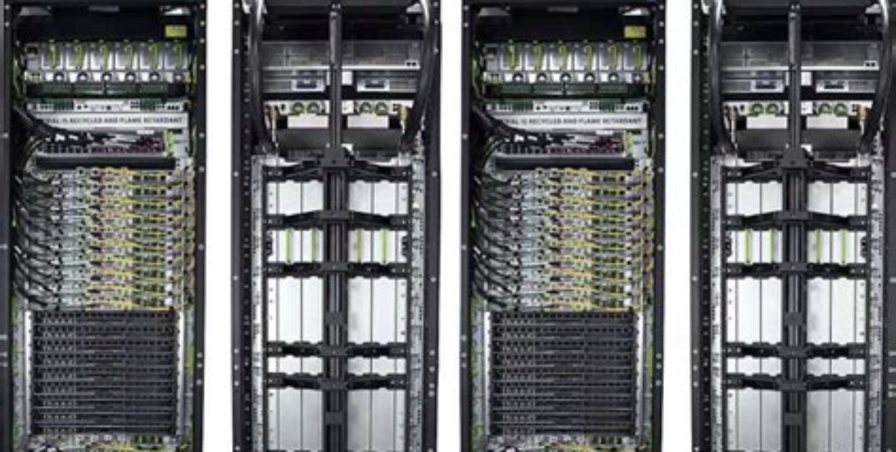
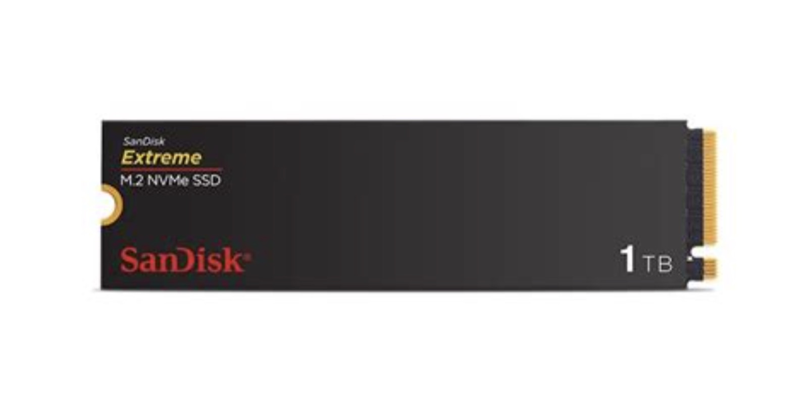

NASDAQ: SNDK
闪迪
85% 的毛利率，能留几个季度
这份报告怎么读，以及它不做什么
写作原则
- 所有数据标注来源与日期。财务数据以 10-K/10-Q 与公司新闻稿为准；行业价格标注 TrendForce 等机构的发布月。
- 不假造调研。本报告未对闪迪及其客户、供应商进行任何一手访谈，未进入工厂，未拆解产品。
- 区分事实与判断。事实用陈述句并附来源；判断写「我们认为」，并给出证伪条件。
- 不用模糊词。「大幅」「显著」必附数字；拿不到的数字，说明为什么拿不到。
口径说明
财年截至 6 月最后一个周五，FY2026 截至 2026 年 7 月 3 日。全文「美元」指美元，「亿」指 1 亿。
一个必须提醒的变化
2026 年 11 月 19 日，公司 8 拆 1 拆股生效。本报告所有每股数据、目标价均为拆股前口径；拆股后请除以 8（目标价 1,300 美元 = 拆股后 162.5 美元）。
没做的事
① 未获取 NBM 合同全文；② 未访谈云厂商采购团队；③ 未验证铠侠产线的实际良率；④ 未使用付费数据库。
目录 八章
全文 8 章 · 47 节 · 164 个子目
图表 50 张，数据表 110 张。第 2、5、6 章为本文核心。
八章结构与页面分布
| 章 | 标题 | 该章要回答的问题 | 页数 | 页码 |
|---|---|---|---|---|
| 01 | 公司：三次重启，一次比一次彻底 | 它怎么变成今天这样，哪些是能力，哪些是时机 | 19 | 011—029 |
| 02 | 行业：NAND 的第三次定价权转移 | 钱在哪一层，为什么供给回不来 | 31 | 030—060 |
| 03 | 技术：护城河在接口，不在阵列 | 技术领先能折算成几个季度的超额利润 | 28 | 061—088 |
| 04 | 竞争：杀死它的不会是三星 | 对手追上来要多久，价格会掉多少 | 18 | 089—106 |
| 05 | 财务：85% 的毛利率里，一半是合同 | 这个利润率怎么来的，能留多久 | 31 | 107—137 |
| 06 | 估值：1000 美元在为什么定价 | 现价隐含什么假设，假设合理吗 | 21 | 138—158 |
| 07 | 风险：九个可能出错的地方 | 什么信号出现时该承认错了 | 17 | 159—175 |
| 08 | 结论：增持，目标价 1300 美元 | 买不买，什么价买，什么价卖 | 16 | 176—191 |
| — | 附录与声明 | 来源、方法与免责声明 | 9 | 192—200 |
五条结论
01 85% 的毛利率里，一半是合同
NBM 覆盖 2027 财年 50%、2028 财年 67% 的比特出货，按合同底价仍能实现约 80% 的毛利率。这意味着周期底部被抬高了约 20 个百分点——从历史的下行期 20% 毛利，抬到 40—45%。
02 便宜的市盈率是假的，正常化市盈率是真的
4.6 倍 FY27E 市盈率，分母是周期顶部的盈利。按正常化 EPS 95 美元计算，市盈率是 10.6 倍——处于 8—15 倍区间的下沿，不贵，但也不到「捡钱」。
03 供给刚性比需求弹性更值得下注
2027 年 NAND 晶圆产能只增 3.2%，比特供给增 13%，需求增 30%。缺口不是缩小，是扩大。真正的拐点在 2027 年下半年，不是现在。
一句话
市场按「周期下行 + 合同失效 + AI 刹车」三件事同时发生来定价，而它们同时发生的概率只有 11%。
04 估值已经计入了衰退
现价隐含 FY28E EPS 105 美元，比我们的基准低 50%。这个假设对应「2028 年价格跌 30% + 毛利率跌到 58%」。
05 这是周期交易，不是长期持有
目标价 1,300 美元，上行 30%，下行 40%。它适合做卫星仓位（上限 8%），不适合做核心仓位。到 1,300 就应该减仓。
评级、目标价与关键假设
目标价的三个组成部分
| 方法 | 关键假设 | 隐含价值 | 权重 |
|---|---|---|---|
| 正常化市盈率 | EPS 95 × 14x | 1,330 | 45% |
| FY27E 市盈率 | EPS 218 × 6.3x | 1,373 | 35% |
| 现金流收益率 | 200 亿 FCF ÷ 15% | 883 | 20% |
| 加权目标价 | 取整 | 1,300 | 100% |
什么情况下这个判断会错
- 2028 年供给增速超过 30%。全行业扩产会让价格跌回现金成本，目标价降至 900 美元。
- NBM 客户在价格下行时违约。合同的法律效力从未被检验，一旦违约，估值回到纯周期股（8 倍）。
- ASI 法案通过。概率 15%，但一旦发生，目标价无关紧要——那是一个 -40% 的尾部。
关键数据 一张表看完全部
| 指标 | 数值 | 说明 |
|---|---|---|
| 股价（2026-11-11） | 1,003 美元 | 拆股前 |
| 市值 | 1,428 亿美元 | 按 142 百万股 |
| FY27Q1 收入 | 110.3 亿美元 | 同比 +378% |
| FY27Q1 毛利率 | 85.0% | 非 GAAP 85.1% |
| FY27Q1 净利润 | 81.0 亿美元 | 净利率 73.4% |
| FY27Q1 经营现金流 | 63.6 亿美元 | FCF 57 亿 |
| 现金 / 有息负债 | 51 亿 / 0 | 零负债 |
| NBM 覆盖（FY27/FY28） | 50% / 67% | 8 家客户 |
| 数据中心收入占比 | 43.5% | 一年前 13% |
| 回购授权余额 | 105 亿美元 | 占市值 7.4% |
| 52 周区间 | 183—2,354 美元 | 拆股前 |
多空双方各自最硬的一条论据
多头最硬的一条
「939 亿美元的合同，80% 的毛利底线，4.6 倍的市盈率。」
8 家客户、加权 4 年的 NBM，按底价算仍有 80% 毛利率。这不是预测，是已经签下的合同。市场用 4.6 倍市盈率给它定价，等于认为合同会失效、价格会腰斩、需求会消失。
可验证性：2027 年二季度财报，如果 NBM 覆盖率达到 55%、毛利率维持 84%，这条论据成立。
空头最硬的一条
「2028 年供给增 26%，而它 33% 的比特还在现货市场裸奔。」
NBM 只覆盖三分之二的比特。剩下三分之一，价格跌多少，利润就跌多少。2028 年三星 P5、美光新加坡、海力士 M17 同时投产，这是过去十年最大的一次供给潮。
可验证性：2028 年上半年合约价环比转负，且跌幅超过 10%，这条论据成立。
立场
两条都成立。多头的论据决定「底线」，空头的论据决定「时点」。当前股价已经把空头的论据折现了 100%，只给多头的论据折现了 50%。这个不对称，是「增持」的原因。
三种 2028 年的可能，与对应的股价
| 情景 | 概率 | 核心假设 | FY28E EPS | P/E | 隐含股价 | 较现价 |
|---|---|---|---|---|---|---|
| 乐观 价格不跌 | 20% | NAND 价格 2028 年持平，NBM 覆盖 75%，HBF 送样顺利 | 300 | 7.0x | 2,100 | +109% |
| 基准 价格跌 10% | 55% | 价格 2028 年跌 10%，毛利率 74%，回购 200 亿 | 211 | 6.2x | 1,300 | +30% |
| 悲观 价格跌 30% | 25% | 供给过剩，合同部分失效，毛利率 58% | 105 | 5.7x | 600 | -40% |
概率分配依据：2027 年供给仍然紧张（确定性高），2028 年供给潮（确定性也高），两者的差异在需求端。我们给「价格不跌」20%，因为 2028 年需求增速仍高于供给。
股价换算：FY28E EPS × P/E。悲观情景给更高倍数（5.7x vs 6.2x），因为市场在底部会给复苏期权定价。
七个可被证伪的判断
| # | 判断 | 依据 | 时间点 | 证伪条件 |
|---|---|---|---|---|
| 1 | FY2027 收入 470—490 亿美元 | Q1 110 亿 + Q2 指引 124 亿 + 季节性 | 2027Q3 | 低于 430 亿或高于 520 亿 |
| 2 | FY2027 非 GAAP 毛利率 ≥82% | NBM 底价 80%，结构继续上移 | 2027Q3 | 连续两季低于 78% |
| 3 | FY2028 收入增速 +5% 至 +15% | 低于公司指引，因价格下行 | 2028Q3 | 高于 +25% 或低于 -5% |
| 4 | 2027 年 NAND 合约均价 +25—45% | 供给 +13%，需求 +33% | 2027Q4 | 全年涨幅低于 10% |
| 5 | 2028 年上半年合约价首次环比下跌 | 供给潮在 2028 年集中释放 | 2028Q2 | 2028H1 合约价仍环比上涨 |
| 6 | FY2027 回购 ≥150 亿美元 | FCF 250 亿，100% 返还 | 2027Q3 | 低于 80 亿美元 |
| 7 | FY2028 非 GAAP EPS ≥150 美元 | 价格跌 10%、毛利率 74% | 2028Q3 | 低于 120 美元 |
方法
每季度末对照一次。当 3 条以上被证伪时，无论盈亏都应重新审视持仓。财务数字为拆股前口径。
公司
三次重启，一次比一次彻底
1988：三个工程师，一张卡
闪迪不是从实验室里长出来的，是从一个具体的产品缺口里长出来的：1988 年，数码相机需要一块能反复写入、断电不丢数据的存储卡。当时的方案是昂贵的 SRAM 加电池，或者一次性写入的 ROM。
Eli Harari、Sanjay Mehrotra、Jack Yuan 三个人在加州创立 SunDisk，把 NAND 闪存和控制器封进一张卡里。1991 年做出 20MB 的固态存储卡，1995 年在纳斯达克上市，同年改名 SanDisk。
此后二十年，这家公司靠两件事活着：把每 GB 成本压到别人压不到的位置，以及把标准握在自己手里。SD 卡、microSD 卡、CF 卡，闪迪都是标准制定者之一。消费电子史上每一次存储容量跃迁，几乎都有它的名字。
但存储卡是一门天花板很低的生意。2006 年它花 15.5 亿美元买下 msystems，把触角伸进手机嵌入式存储；2016 年，它把自己卖给了西部数据。
三个创始人
| Eli Harari | 闪存商业化之父，首任 CEO |
| Sanjay Mehrotra | 后任 CEO，2017 年出任美光 CEO |
| Jack Yuan | 技术共同创始人 |
三个关键年份
| 1988 | SunDisk 成立 |
| 1995 | 纳斯达克上市，改名 SanDisk |
| 2006 | 15.5 亿美元收购 msystems |
2016：被一家硬盘公司买下的九年
2015 年 10 月，西部数据宣布以约 190 亿美元收购闪迪，对价是 67.50 美元现金加 0.2387 股西数股票。2016 年 5 月交割。
逻辑听上去很顺：硬盘在往冷数据退，闪存在往热数据进，一家公司同时拥有两者，就能覆盖整个存储金字塔。但九年的实践说明，把两种周期完全不同的生意放进同一张报表，只会让两种周期互相干扰。
闪存的资本开支节奏由层数竞赛决定，硬盘的资本开支节奏由磁头与碟片产能决定；闪存三年一轮下行，硬盘五年一轮。合并后的公司估值被按「硬盘公司」定价，闪存业务的技术投入被拿来和硬盘的现金流比较。
2022 年，激进投资者 Elliott 公开要求西数拆分闪存业务。理由很直接：两块业务在一起，谁都不值钱。三年后，这个要求变成了现实。
九年里的三次下行
2018—2019：NAND 供给过剩，价格跌 40% 以上，闪存业务利润归零。
2022—2023：需求崩塌、库存高企，行业性亏损，西数闪存业务单季亏损 19 亿美元。
2025：AI 需求启动，价格触底回升，分拆完成。
下行周期里，闪存业务的资本开支被压缩，这直接造成了 2026 年的供给缺口。因果链在后面几章展开。
2025：作为纯闪存公司重新上市
2025 年 2 月 21 日完成分拆，2 月 24 日以 SNDK 开始交易。分拆时的起点并不好看：2025 财年收入 73.6 亿美元，GAAP 净亏损 16.4 亿美元。
但接下来十二个月，它成了标普 500 里表现最好的股票。2025 年底股价 237 美元，2026 年 6 月 22 日盘中最高 2,354 美元，十八个月涨了近 59 倍（按分拆后约 40 美元的起点计）。
涨的理由不是「分拆释放价值」这类财务技巧，而是一个产业事实：AI 推理需要把上下文留在离 GPU 更近的地方，而 HBM 太贵、太贵、容量太小。闪存成了唯一能在容量上接住这个需求的技术。
2025 年底，闪迪被纳入标普 500。被动资金的买入，与基本面的反转同时发生。
起点：73.6 亿美元收入，16.4 亿美元亏损
分拆时的闪迪，是一家被周期压在地上摩擦了两年、刚刚看到曙光的公司。2025 财年收入 73.6 亿美元，同比增长 10%；毛利率 30.1%；营业费用 35.9 亿美元，其中包含分拆相关的一次性费用。
GAAP 净亏损 16.4 亿美元，折合每股亏损 11.32 美元；剔除一次性项目后，非 GAAP 净利润 4.4 亿美元，每股 2.99 美元。一家年收入 74 亿美元的公司，正常化利润只有 4.4 亿美元——这就是 NAND 生意的常态。
2025 年第四财季（截至 6 月 27 日）收入 19.0 亿美元，毛利率 26.2%，营业利润 0.18 亿美元。那是这轮周期的底部：再低一点，闪存价格就要跌破现金成本。
十二个月：从 23 亿到 110 亿
| 季度 | 截止日 | 收入（百万美元） | 环比 | 毛利率 | 净利润 | 摊薄 EPS |
|---|---|---|---|---|---|---|
| FY26 Q1 | 2025-10-03 | 2,308 | — | 29.8% | 112 | 0.75 |
| FY26 Q2 | 2026-01-02 | 3,025 | +31% | 50.9% | 803 | 5.15 |
| FY26 Q3 | 2026-04-03 | 5,950 | +97% | 78.4% | 3,615 | 23.03 |
| FY26 Q4 | 2026-07-03 | 8,965 | +51% | 84.6% | 6,903 | 43.97 |
| FY27 Q1 | 2026-10-02 | 11,031 | +23% | 85.0% | 8,101 | 52.60 |
| FY27 Q2E | 2026-12-31 | 12,200—12,600 | +13% | 84.5—85.5% | — | 55—57 |
注意最后一个季度的净利润率：73.4%。这个数字在半导体史上没有先例。
产能：为什么供给回不来
闪迪自己不建晶圆厂。它的全部裸片来自与铠侠合资的 Flash Ventures，工厂在四日市和北上。两家公司分担资本开支，按比例分货。
2022 年下行周期里，公司把产能砍到峰值的七成左右。公司称，行业在上一轮下行中退出约 56 万片/月的产能，而重建一条产线要 18—24 个月。这就是为什么 2026 年价格翻了三倍，供给却一条线都没多出来。
2026 年 7 月，北上 Fab2 开始量产 BiCS10。这是全球第一条第 10 代 3D NAND 产线，但它的爬坡曲线是线性的：一条新产线从投产到满产，通常要 4—6 个季度。
2027 财年资本开支指引：收入的「中个位数百分比」。Q1 实际 3.4%。以 480 亿美元收入计，全年约 25—30 亿美元——相对 200 亿美元的折旧基数，这个投入只能维持技术迭代，不足以扩张。
产能的三个约束
| 约束 | 现状 | 缓解时间 |
|---|---|---|
| 洁净室 | 四日市、北上均已满 | 2028 年 |
| 设备交期 | 刻蚀/沉积 9—12 个月 | 2027 下半年 |
| 层数转换 | 每次转换损失 8—12% 产能 | 持续 |
三个终端市场，三种经济性
2026 财年，闪迪把收入拆成三块：数据中心 51.5 亿美元（25.5%）、边缘 121.6 亿美元（60.1%）、消费 29.4 亿美元（14.5%）。
三块生意的经济性完全不同。数据中心是 QLC 企业级 SSD，单笔合同上亿美元，毛利率最高；边缘是 PC、手机、汽车的嵌入式存储，量大、价格敏感；消费是零售卡和 U 盘，品牌溢价高但规模在萎缩。
2026 财年，数据中心收入增长 437%，边缘增长 195%，消费增长 29%。不是消费不行了，是公司将产能主动挪给了数据中心。
收入结构：一年之内，重心换了位置
2025 财年，数据中心只占 13.1%；2026 财年 25.5%；2027 财年第一季度 43.5%。三个季度，占比翻了近一倍。
这个迁移不是自然发生的。公司在 2026 年上半年把晶圆产能从消费级产品线抽出来，转向企业级 QLC。代价是消费收入环比跌 29%，边缘只涨 7%。
结果写在毛利率上：消费级产品毛利率约 35%，企业级 90% 以上。同样的晶圆，做成企业级 SSD，收入是消费级的 3 倍。这是结构性的，不是周期性的。
但要小心一个错觉：结构迁移带来的毛利率提升是一次性的，最多还有 10 个百分点的空间（数据中心占比到 55% 时见顶）。之后毛利率只能靠价格和成本。
产品：从一张卡到一台机架的容量
闪迪的产品线比大多数人以为的长。消费端是 microSD、U 盘、移动固态硬盘；边缘端是手机嵌入式存储、PC 客户端 SSD、车规存储；数据中心端是企业级 SSD，容量从 32TB 到 256TB。
2026 年最重要的产品是代号 Stargate 的 QLC 平台：单盘 128TB 与 245TB 两个档位，面向 AI 数据湖与向量数据库。它的竞争对手不是硬盘，是「用硬盘堆出来的冷存储层」。
2026 年 11 月，公司宣布 8 拆 1 拆股，11 月 19 日生效。拆股不改变价值，但它说明管理层希望散户和员工能买得起——这是一个信号，不是原因。
四条产品线
| 产品线 | 代表产品 | 客户 | 毛利率档 |
|---|---|---|---|
| 数据中心 | Stargate QLC 128/245TB | 三家美国云厂商 | 90%+ |
| 边缘 | BiCS8 客户端 SSD、UFS 4.1 | PC/手机 OEM | 70—80% |
| 汽车与 IoT | 车规 eMMC/UFS | Tier 1 | 60—70% |
| 消费 | Extreme PRO、WD_Black | 零售渠道 | 30—40% |
Goeckeler：一个卖交换机的，来管闪存
David Goeckeler 2020 年出任西部数据 CEO，2025 年分拆后留任闪迪董事长兼 CEO。在此之前，他在思科干了 19 年，最后负责规模 340 亿美元的网络与安全业务。
他的背景解释了两件事。第一，他习惯用「系统」而不是「器件」的方式想问题——闪迪现在的叙事不是「我们的 NAND 更快」，而是「我们的存储在 AI 推理架构里应该放在哪一层」。第二，他对企业客户的采购逻辑很熟，NBM 这种「量价担保」的合同结构，本质上是把运营商式的长约搬到了存储行业。
他在 2026 年 10 月电话会上的一句话，后来被引用得最多：「我们从客户那里了解到，他们低估了运行基础设施所需的 NAND 容量。」
CFO Luis Visoso 2025 年 2 月到任，此前在思科与 Palo Alto Networks 任职。财务风格是「零负债 + 全额返还」：不囤现金，不做并购，不为规模牺牲毛利。
管理层与治理
| 董事长兼 CEO | David Goeckeler |
| CFO | Luis Visoso |
| 董事会 | 分拆后重组，独立董事占多数 |
| 总部 | 加州 Milpitas |
| 员工 | 约 1.1 万人（2026） |
资本配置：零负债，然后把手里的钱全还回去
三条原则
- 先投技术。资本开支保持收入的个位数百分比，优先 BiCS 路线图与 HBF。
- 保持零负债。公司明确表示，强资产负债表是穿越周期的保险，不打算加杠杆。
- 剩余全返还。完成投资后的 100% 超额现金，通过回购返还股东；不派息。
这个政策在周期顶部是加分项，在周期底部是风险。如果 2028 年价格下行、现金流收缩，回购会同步收缩——它不能创造现金流，只能分配现金流。
Q1 回购均价约 1,560 美元，高于当前 1,003 美元的股价。短期看是「买贵了」，长期看是「在 4 倍市盈率上回购」——这两句话都对。
股本：8 拆 1 之后，每股 125 美元
拆股不改变价值
8 拆 1 之后，股价从 1,003 美元变成 125 美元，市值不变，市盈率不变。它的作用是提高流动性，让散户与员工持股计划更容易参与。
过去两个季度回购 600 万股，约占流通股 4%，相当于把股本缩回到 2024 年的水平。拆股只是把蛋糕切得更小，不改变蛋糕的大小。
一个容易被忽略的细节：拆股后的 1,208 百万股，是按 151 百万股 × 8 计算的，不是按 142 百万基本股。差出来的 9 百万股是期权与限制性股票。评估稀释时要用 1,208，不是 1,136。
NBM：把「季度议价」换成「四年合同」
NBM 是 New Business Model 的缩写，本质是一份有最低财务担保的多年期供货协议。它由四部分组成：承诺采购量、可执行框架、最低金额担保、结构化定价（近期固定、远期设上下限）。
目前已签 8 家客户，加权平均期限约 4 年，覆盖 2027 财年约 50% 的比特出货、2028 财年约三分之二。三家美国超大规模云厂商在其中。
合同的价值不在于「锁量」，而在于把闪存的定价权从现货市场挪到了一张谈判桌上。代价是：涨价时你赚得比同行少，降价时你亏得比同行少。
最关键的一句：即使按合同价格下限计算，这些业务仍能实现约 80% 的毛利率。这句话如果成立，闪迪的「周期底」被抬高了 40 个百分点。
NBM 的四根柱子
| 要素 | 内容 |
|---|---|
| 量 | 承诺年度/季度采购比特数 |
| 价 | 近期固定价 + 远期上下限 |
| 担保 | 最低合同金额，第三方金融机构持有 |
| 期限 | 加权平均 4 年，最长到 2030 年后 |
939 亿美元：这份合同到底值多少
8 家客户
95% 为投资级，合计年经营现金流约 1,300 亿美元。客户质量比数量重要。
165 亿美元担保
8 家客户提供的财务担保，含 3 家美国云厂商。这是合同「可执行」的底气。
50% / 67%
FY27 与 FY28 的比特覆盖率。剩下的是现货，也是弹性。
NBM 的另一面：把上行让给了客户
2026 年第三季度，NAND 行业合约价环比涨约 20%，闪迪的每 GB 均价只涨了约 8%。这不是执行问题，是合同结构决定的。
公司披露，Q1 收入环比增量的 60% 来自出货量、40% 来自价格。按本报告测算，比特出货环比 +14%，ASP 环比 +8%——价格弹性只有行业的一半。
同时，增量毛利率从上一季度的约 97% 降到约 87%。原因有两个：增量更多来自出货（要带上生产成本），以及数据中心产品占比提升带来单位成本上升（环比 +5%）。
这就是「用弹性换确定性」的账单。在价格上涨时，它跑输现货玩家；在价格下跌时，它跑赢。判断这家公司，本质上是判断你更相信哪一种未来。
Q1 的量价拆解
| 项目 | 环比 | 说明 |
|---|---|---|
| 收入 | +23% | 110.3 亿美元 |
| 比特出货 | +14% | 本报告测算 |
| ASP/GB | +8% | 行业合约价 +20% |
| 单位成本 | +5% | 产品结构上移 |
| 增量毛利率 | 87% | 上季约 97% |
一张卡，三十年
闪迪的产品史，是一部「把每 GB 成本压到别人压不到」的历史。从 1991 年的 20MB 存储卡，到 2026 年的 245TB 企业级 SSD，容量涨了 1,200 万倍，价格跌了 99%。
图为闪迪便携 SSD 产品线（公开产品图）
结论：六成能力，四成时机
如果没有 2025 年下半年 AI 推理的爆发，这家公司今天大概还在 30% 毛利率上挣扎。但如果没有过去三十年攒下的 CBA 技术与铠侠的合资产能，它也接不住这波需求。
能力
- CBA 键合技术，让接口速度领先一代
- 与铠侠的合资，单位成本低 10—15%
- 三十年品牌与渠道，消费端仍有定价权
时机
- AI 推理对 KV Cache 的需求，2026 年才被验证
- 硬盘短缺把订单挤到 QLC SSD
- 全行业 2023—2025 年砍产能，供给弹性归零
还没证明的
- NBM 能不能在下一轮下行里守住 80% 毛利
- HBF 能不能在 2028 年前商业化
- 数据中心份额能不能从 11% 升到 15%
三个还没答案的问题
| 问题 | 为什么重要 | 观察指标 | 时间点 |
|---|---|---|---|
| NBM 的 80% 毛利底线是真的吗？ | 决定周期底部在哪 | 下一轮价格下跌时的毛利率 | 2028 年 |
| 数据中心份额能到多少？ | 决定成长性能给多少倍 | 企业级 SSD 收入占比 | 每季度 |
| HBF 是增量还是故事？ | 决定 2029 年后的估值 | 送样客户数、良率 | 2027 年 |
它们的共同点是：都无法用当前季度的数据回答。
行业
NAND 的第三次定价权转移
推理把闪存变成了内存的一部分
大模型每生成一个词元，都要回看前面所有词元的 Key 和 Value。这个缓存（KV Cache）随上下文长度线性增长，随并发数线性增长，随模型层数线性增长。
训练时可以重算，推理时不能——重算的代价是 GPU 时间。于是缓存必须存在某个地方：HBM 最快但最贵，DRAM 次之，SSD 便宜但慢一个数量级。2026 年的变化是：上下文长到 HBM 装不下，而重算贵到不划算，闪存第一次成为「必须」而不是「可选」。
公司给出的量化口径：代理式推理每颗 CPU 对应 60—90GB 的闪存需求；在 AI 实验室的对比测试中，配 SSD 的系统词元吞吐量高出约 3 倍，能耗低约 75%。
如果这个逻辑成立，NAND 的需求曲线就不再跟随手机和 PC 的出货量，而是跟随 token 的消耗量。后者在 2026 年的增速是三位数。
存储层级
| 层级 | 带宽 | 容量 | 成本/GB |
|---|---|---|---|
| HBM3E | 1.2 TB/s | 36—288 GB | $15—20 |
| DDR5 | 0.05 TB/s | 1—3 TB | $2—4 |
| 企业级 SSD | 7—14 GB/s | 32—256 TB | $0.15—0.30 |
| 近线硬盘 | 0.3 GB/s | 24—32 TB | $0.015—0.02 |
数据中心：从 20% 到 50%，再到 55%
十年前，数据中心只占 NAND 比特需求的约 20%，手机和 PC 占七成以上。2026 年，数据中心接近一半；公司预计 2027 年超过 55%。
这个迁移的速度比大多数人预想的快。2026 年第二季度，企业级 SSD 占全部 NAND 比特出货的 48%，一年前是 26%。一年翻近一倍，这是需求结构的地震，不是波动。
对供给端的影响是：同样一片晶圆，做成企业级 QLC 能卖出的价格是消费级的 2—3 倍。厂商自然会把产能往那边挪，消费级供给进一步收缩，价格继续涨——一个自我强化的循环。
比特需求：2026 年 +80%，2027 年 +40%
| 终端 | 2025 | 2026E | 2027E | 驱动因素 |
|---|---|---|---|---|
| 数据中心（企业级 SSD） | +120% | +80% | +40% | KV Cache、向量库、训练检查点 |
| 客户端（PC/手机） | +3% | -6% | +2% | 出货下滑，单机容量上升 |
| 消费（卡/U 盘） | +1% | -12% | -5% | 价格弹性，渠道去库存 |
| 汽车与工业 | +18% | +22% | +20% | 智驾数据记录、车规存储 |
| 合计（比特） | +38% | +42% | +27% | — |
数据中心 2026 年「翻倍以上」为公司口径；2027 年 +40% 为公司指引。合计值为加权平均，权重按 2026 年比特结构。
硬盘短缺：一场跨品类的订单转移
这轮 NAND 短缺的起点，其实是硬盘。2025 年下半年，近线硬盘的交期从几周拉长到 52 周以上，北美的云厂商开始用 QLC SSD 替代冷数据存储。
两块市场由此咬合：硬盘缺货 → 订单转向 SSD → NAND 涨价 → 部分买家回流硬盘 → 硬盘更缺。两个行业在数据中心相遇，把各自的短缺变成了对方的需求。
西部数据 2026 年 8 月披露，云客户占其收入的 89%。这个数字说明硬盘的产能已经被云吃干，没有余量分给「用 SSD 太贵」的那部分客户。
这个循环什么时候断？要么硬盘产能扩张（2028 年），要么 SSD 价格涨到客户宁愿等硬盘（已经在发生）。它是 NAND 需求里最脆弱的一块。
订单转移的链条
闪迪的 QLC 产品线（Stargate）正是为这个缺口设计的：单盘 245TB，替代 8—10 块近线硬盘。
消费端：价格弹性第一次真实出现
256GB TLC SSD 的合约价，从 2025 年三季度的 33.3 美元涨到 2026 年三季度的 134.2 美元，涨幅 303%。1TB 消费级 SSD 的零售均价从 59 美元涨到 144 美元。
需求给出了反应：英特尔把 2026 年 PC 出货指引下调到 -12%，并预计 2027 年再降 10%，理由直接写的是「存储供应受限」。手机厂商在低端机型上把 256GB 降回 128GB。
闪迪自己的消费业务收入，从 2025 财年第四季度的 5.85 亿美元掉到 2027 财年第一季度的 3.97 亿美元，六个季度缩水三分之一。
这是好消息，不是坏消息。消费端萎缩释放出的晶圆，转去做企业级，毛利率从 35% 变成 90%。只要数据中心的增量大于消费的减量，公司的利润就还在扩张。
2026 年的 NAND 市场：一个季度 787 亿美元
一个季度 787 亿美元的市场
2Q26 全球 NAND 收入 787 亿美元，环比 +84%。三星以 230.6 亿美元居首，份额 29.3%；闪迪 89.7 亿美元，份额 11.4%。
闪迪的环比增速 50.7%，是五强里最低的——不是需求弱，是 NBM 把价格锁住了（见 1.5.3）。这是主动选择，不是竞争失利。
份额的算法有两种：按收入、按比特。闪迪按比特的份额约 13%，高于按收入的 11.4%——它卖的产品单价更低。
2030 年 1.2ZB：这个数字该怎么读
公司在投资者日给出一个数字：到 2030 年，企业数据中心闪存的总可用市场（TAM）将达到 1.2ZB。市场对这个数字的反应是「相当于今天整个 NAND 行业」。
这个换算需要拆开看。1.2ZB 等于 1.2 万亿 GB。按 2030 年企业级 QLC 的合约价 0.12—0.20 美元/GB 计算，对应收入 1,440—2,400 亿美元。今天整个 NAND 行业年收入约 2,500 亿美元。所以「接近今日行业规模」这句话，在算术上成立。
但它是「量」的目标，不是「价」的目标。1.2ZB 是按比特算的，价格每年还在跌 10—15%。如果 2030 年价格是 0.08 美元/GB，同样 1.2ZB 只有 960 亿美元。
我们的看法：1.2ZB 大概率能达到，但它对应的收入中枢是 1,200 亿美元，不是 2,400 亿。这个差异，是估值模型里最敏感的一个假设。
1.2ZB 的三种价格假设
| 2030 价格（美元/GB） | 对应收入 | 概率 |
|---|---|---|
| 0.20 | 2,400 亿美元 | 20% |
| 0.12 | 1,440 亿美元 | 55% |
| 0.08 | 960 亿美元 | 25% |
1.2ZB 等于 1.2 万亿 GB。按 0.12 美元/GB 计算，对应 1,440 亿美元的收入——接近今天整个 NAND 行业的规模。这个数字是真是假，取决于 AI 推理是否真的需要把上下文留在闪存里。
比特需求测算：假设、结果与误差
| 变量 | 2026E | 2027E | 2028E | 假设依据 |
|---|---|---|---|---|
| AI 服务器出货（万台） | 38 | 52 | 64 | 2026 年基数 +37%，2027 年放缓至 +37% |
| 单机企业级 SSD 容量（TB） | 96 | 128 | 160 | KV Cache 需求，每年 +33% |
| 企业级 SSD 比特（EB） | 365 | 666 | 1,024 | 出货 × 容量 |
| 消费与客户端（EB） | 620 | 640 | 670 | 出货下滑被单机容量抵消 |
| NAND 总需求（EB） | 985 | 1,306 | 1,694 | — |
| 总需求增速 | +42% | +33% | +30% | — |
与第三方对比：花旗预计 2027 年企业级 SSD 需求 +52.9%，我们假设的 +83% 偏高，原因是我们对单机容量的假设更激进。
价格：2026 年涨 236%，2027 年涨 45%
2026 年 NAND 混合均价同比上涨 236.2%，这是有记录以来最大的一年。分季度看：二季度环比 +70—75%，三季度 +10—15%，四季度 +15—20%。
2027 年的分歧很大。花旗预测混合均价再涨 45.3%；TrendForce 认为下半年供给转松、价格承压；公司自己的指引只假设「小幅上涨」。
我们取中间：2027 年上半年同比涨幅仍有 30—45%，下半年环比转平，全年均价 +25—35%。这个判断的关键变量不是需求，是三星的产能纪律。
价格是这门生意里唯一重要的二阶导。2026 年三季度价格还在涨，但涨幅只有二季度的五分之一——这才是 10 月 30 日股价下跌的真实原因，不是财报。
需求判断的证伪条件
| 判断 | 依据 | 什么情况下算错 |
|---|---|---|
| 2027 年 NAND 比特需求 +30% 以上 | 企业级 SSD +80%、AI 服务器 +37% | 2027 年上半年需求增速低于 20% |
| 数据中心占比 2027 年超 55% | 2026 年已达 48%，趋势单调 | 2027 年二季度占比低于 50% |
| 2027 年均价 +25% 以上 | 供给 +3.2% 晶圆、需求 +33% | 2027 年下半年合约价环比连续两季下跌 |
| 消费端继续萎缩 | 价格弹性已经出现 | 2027 年消费收入同比转正 |
我们把它们放在第 10 页的七个判断里，按季度核对。
2026 年：一条新产线都没有
这是这轮周期最反常识的地方：价格涨了三倍，供给却几乎没动。TrendForce 的原话是「主要 NAND 厂商 2026 年几乎不新增产能」。
原因不复杂。2023—2024 年全行业亏损，厂商把资本开支砍到维护水平；2025 年需求回暖时，设备交期已经排到 9—12 个月后；等设备到货、装进洁净室、调通良率，2027 年已经过了一半。
闪迪的动作更保守：它不建厂，只做节点转换。2026 年 7 月北上 Fab2 量产 BiCS10，是行业当年唯一一条真正的新产线。
供给的价格弹性，在存储行业接近于零。这不是经济学教科书里的假设，是 18 个月的建设周期决定的。
四家厂商的 2026 动作
| 厂商 | 动作 | 有效增量 |
|---|---|---|
| 三星 | V9 286 层，年底 5,000 片/月 | 极小 |
| SK 海力士 | 321 层占韩国产能一半 | 节点转换 |
| 美光 | 下一代节点 2027 下半年 | 2028 |
| 铠侠/闪迪 | 北上 Fab2 量产 BiCS10 | 爬坡中 |
洁净室、设备、良率：三道时间闸门
建一条 NAND 产线要多久？洁净室 12—18 个月，设备安装调试 6—9 个月，良率爬坡 2—4 个季度。加起来，从决策到满产，24—30 个月。
设备端更紧。刻蚀与沉积设备的交期在 2026 年普遍是 9—12 个月，ASML 的光刻机交期更长。日本、美国、荷兰的出口管制又给中国厂商加了一道闸门。
还有一道隐性闸门：层数转换会损失产能。把一条 BiCS8 产线切到 BiCS10，转换期间产出下降 8—12%，转换后每片晶圆的比特数提升 40—60%。账算得过来，但当年供给是负增长。
时间账
| 环节 | 周期 | 2026 年状态 |
|---|---|---|
| 洁净室建设 | 12—18 个月 | 无新增开工 |
| 设备交期 | 9—12 个月 | 排至 2027 年 |
| 晶圆生产 | 约 120 天 | 满产 |
| 良率爬坡 | 2—4 季度 | BiCS10 初期 |
层数竞赛：286、321、218，谁在前面
层数不是唯一的指标
三星 286 层、SK 海力士 321 层、长江存储 294 层，看起来闪迪落后。但层数只决定「每片晶圆能切多少 die」，不决定「每个 die 能存多少比特」。
BiCS10 的 2Tb QLC 单 die，是目前业界容量最高的产品。在 QLC 这条线上，密度比层数更能说明问题。
层数竞赛的边际收益在递减：从 176 层到 218 层，成本降 20%；从 286 层到 321 层，只降 8%。
2027 年供给：晶圆只多 3.2%
花旗的测算是：2027 年全球 NAND 晶圆产能 146 万片/月，同比只增 3.2%。三星的 NAND 产能甚至下降 4.7%，SK 海力士与美光基本持平。
比特供给的增长主要来自层数，而不是晶圆。摩根大通预计 2027 年 NAND 比特供给增长 12—14%，低于需求增速的 30%。缺口不是在缩小，是在扩大。
真正的增量在 2028 年：美光新加坡厂下半年产出，SK 海力士 M17 首座洁净室 2028 年 12 月启用，三星 P5 也在 2028 年。换句话说，2027 年是最后一个确定的短缺年。
对闪迪的含义：2027 财年（到 2027 年 6 月）的价格环境是安全的；2028 财年下半年开始，供给压力会真实出现。这正好对应 NBM 覆盖率从 67% 向更高爬升的窗口。
拐点：2027 年下半年，还是 2028 年
| 机构 | 拐点判断 | 依据 | 可信度 |
|---|---|---|---|
| TrendForce | 2H27 转松 | 层数迁移 + 新厂爬坡 | 高 |
| 花旗 | 2031 年前都缺 | AI 持续学习、NAND 投资不足 | 中 |
| 摩根大通 | 2028 年缓解 | 比特供给 +12—14% | 中 |
| 本报告 | 2H27 价格见顶，2028 年下行 | 供给 +26% vs 需求 +30%，靠库存缓冲 | 中 |
我们选择「2H27 见顶」作为基准，因为它与合约价、铠侠指引、三星产能三个独立信号一致。
从季度合约到四年长单：定价权搬家
NAND 过去的标准做法是季度合约：每季度谈一次价，谈完当季执行。买方利用供应商之间的竞争压价，卖方利用短缺抬价。价格是「谈」出来的，不是「算」出来的。
2026 年，这个机制被两份力量同时改写。需求端，云厂商发现按季度采购保证不了供应，开始签 3—5 年的长约；供给端，厂商发现长约能锁定产能利用率，愿意用价格上限换取量的确定性。
结果是价格从「现货的导数」变成了「合同的函数」。这对行业是好事：波动率下降，资本回报率上升。对投资者是坏事：周期股的弹性消失了，估值方法要换。
三种定价机制
| 机制 | 期限 | 价格 | 谁承担风险 |
|---|---|---|---|
| 现货 | 即时 | 随行就市 | 买方 |
| 季度合约 | 3 个月 | 季度议价 | 双方 |
| NBM/长单 | 3—5 年 | 固定 + 上下限 | 卖方（下限）/ 买方（上限） |
合约价的二阶导：从 +72% 到 +12%
2026 年二季度，NAND 合约价环比涨 70—75%；三季度 +10—15%；四季度指引 +15—20%。价格还在涨，但斜率变了。
10 月 30 日，铠侠给出 12 月季度营业利润 2 万亿日元的指引，环比几乎零增长，低于市场预期的 2.35 万亿。第二天，闪迪盘前跌 8%，美光跟跌。市场卖的不是业绩，是斜率。
这个反应是否过度？取决于你认为「环比零增长」是暂时还是趋势。我们的判断是：铠侠的指引反映的是它自己的产品结构（消费占比高），不是全行业。闪迪的企业级占比更高，四季度指引仍是环比 +13%。
但市场是对的：当价格涨幅从 72% 降到 12%，按「曲线越来越陡」定价的股票必须重估。这是数学，不是情绪。
现货与合约：20% 的价差说明什么
两个方向相反的价格，说明一件事
企业级现货比合约贵 28%，说明真实缺货；消费级现货比合约便宜 13%，说明渠道在去库存。
这不是「市场供需」，是「结构性短缺」。同一家公司，两条产品线，两个方向。
价格数据为 2026 年 10 月第三周渠道报价的中间价。
买方：三家云厂商，1,300 亿美元现金流
闪迪的 NBM 客户里，95% 是投资级公司，合计年经营现金流约 1,300 亿美元。三家美国超大规模云厂商提供了 165 亿美元财务担保。
这个结构说明：闪迪把信用风险转移给了买方，同时把定价权部分让给了买方。合同的价格上限，是买方愿意签长约的对价；合同的量承诺，是卖方愿意让价的对价。
买方为什么愿意签？因为 2026 年的教训太痛：拿不到货，数据中心就开不了。对云厂商来说，多付 20% 的存储成本，好过晚一个季度上线。
风险在于：如果 2028 年价格跌到合同下限以下，买方会不会违约？165 亿美元担保覆盖不了全部合同价值，但覆盖了大部分「违约动机」。
合同的风险分配
| 情形 | 价格 | 谁受损 |
|---|---|---|
| 现货价 > 上限 | 按上限 | 卖方（少赚） |
| 下限 < 现货 < 上限 | 按公式 | 双方共担 |
| 现货价 < 下限 | 按下限 | 买方（多付） |
价格见顶的四个信号，现在出现了几个
| 信号 | 现状 | 是否出现 |
|---|---|---|
| 合约价环比涨幅连续两季收窄 | 72% → 12% → 18%（反弹） | 部分 |
| 消费端拒绝接受涨价 | PC 出货 -12%，手机降容 | 是 |
| 渠道库存回升 | 客户端 SSD 现货折价 13% | 是 |
| 厂商宣布扩产 | 三星 V9 扩至 4 万片/月（2027 底） | 否 |
| 长约覆盖率下降 | 闪迪从 50% 升至 67% | 否 |
这也是我们判断「2027 年上半年价格仍安全」的依据。
NAND 的成本结构：折旧占一半
一片 NAND 晶圆的成本，大约一半是设备折旧，四分之一是材料（硅片、光刻胶、特气），其余是人力、电力与良率损失。
这个结构决定了两个行为。第一，产能利用率比价格更重要：折旧是固定的，多产一片就多摊薄一点。第二，层数越高，单位成本越低：同样的设备折旧，摊到更多比特上。
2026 年的反常之处是：成本没有下降。单位 GB 成本环比还涨了 5%，因为产品结构转向企业级（封装更贵、测试更久），以及层数转换期间的良率损失。
这解释了一个关键问题：85% 的毛利率里，有多少是价格，有多少是成本？答案是几乎全是价格——成本端在 2026 年是逆风。
设备与材料：卡在三家手里
| 环节 | 主要供应商 | 集中度 | 交期 | 地缘风险 |
|---|---|---|---|---|
| 光刻 | ASML | 100% | 12—18 个月 | 荷兰出口管制 |
| 刻蚀 | Lam、TEL、应用材料 | CR3 > 80% | 9—12 个月 | 美国/日本管制 |
| 沉积 | 应用材料、Lam、TEL | CR3 > 75% | 9—12 个月 | 同上 |
| 硅片 | 信越、SUMCO | CR2 > 55% | 6 个月 | 日本地震带 |
| 特气 | 林德、空气化工 | CR3 > 60% | 4—8 个月 | 能源价格 |
2026 年，设备厂的交期已经排到 2027 年下半年。
2027 年 NAND 资本开支：218 亿美元
花旗预测 2027 年全球 NAND 资本开支 218 亿美元，同比增长 34.2%。其中三星 79 亿、铠侠 37 亿、SK 海力士 31 亿、闪迪 29 亿、美光 21 亿。
218 亿美元听起来很多，但分摊到全年比特产出上，只够维持 13% 的增长。NAND 的资本强度大约是每 10 亿美元投资对应 5—6% 的比特增长。
对比 2018 年：那一年 NAND 资本开支 240 亿美元，比特增长 40%。同样的钱，现在只能买到三分之一的增长——层数越高，每层需要的光刻与刻蚀步骤越多，设备投资回报在下降。
地缘：日本出钱，中国出局，美国出政策
NAND 的产能高度集中在日本（铠侠/闪迪）和韩国（三星、SK 海力士）。日本政府为四日市与北上的下一代产线提供了合计 2,429 亿日元补贴。
中国是最大的买家，也是被排除在先进产能之外的玩家。长江存储的 Xtacking 4.0 做到 294 层，但设备国产化率仍不足，扩产受出口管制约束。
美国的作用是需求端：AI 数据中心的审批、能耗审查、以及对华销售限制，都会通过需求影响 NAND 价格。2026 年 11 月的中期选举，把这件事变成了一个真实的变量。
对闪迪的含义：它的产能 100% 在日本，客户主要在美國。这是一个「地缘上安全、物流上集中」的组合——安全，但脆弱。
三地产能版图
| 地区 | 产能占比 | 角色 |
|---|---|---|
| 日本（四日市/北上） | 约 35% | 铠侠 + 闪迪 |
| 韩国 | 约 40% | 三星 + SK 海力士 |
| 中国 | 约 15% | 长江存储 + 外资厂 |
| 美国/新加坡 | 约 10% | 美光 |
一个机架，半吨闪存
AI 推理把数据中心的存储密度推到了物理极限。一台满载 245TB SSD 的机架，容量是同等硬盘机架的 8 倍，功耗只有三分之一。这是闪迪的机会，也是它产能跟不上的原因。
图为数据中心服务器机架（公开图片）
结论：短缺至少到 2027 年年中
2026 年是「价格涨、供给不动」的一年；2027 年上半年是「价格涨幅收窄、供给仍然不动」的半年；真正的拐点在 2027 年下半年，标志是三星 V9 产能爬坡与新厂投产同时发生。
支持这个判断的三个事实
- 2027 年晶圆产能只增 3.2%，比特供给增 13%
- 需求增速 30%，缺口靠库存与价格出清
- 四家厂商的扩产计划都排在 2028 年
可能让它提前的三个变量
- AI 资本开支在 2027 年上半年见顶
- 三星放弃产能纪律，提前释放 V9
- 消费端需求崩塌，库存回流数据中心
争议：是 2027 年的拐点，还是 2031 年的缺口
| 观点 | 代表机构 | 核心逻辑 | 我们的评价 |
|---|---|---|---|
| 2027 年转松 | TrendForce | 层数迁移 + 新厂爬坡 | 供给端的判断更可靠 |
| 缺口到 2031 年 | 花旗 | AI 持续学习，NAND 投资不足 | 假设太强，把训练需求线性外推 |
| 2028 年缓解 | 摩根大通 | 比特供给 +12—14% | 与我们的基准接近 |
| 结构性短缺长期化 | 公司管理层 | NBM 覆盖率提升，供给受控 | 有利益相关，需打折 |
我们的立场：需求是真的，但 2028 年的供给增量也是真的。两者相遇，价格必然下行。
三个反常识
第一，这轮涨价的起点是硬盘，不是 AI。如果没有近线硬盘 52 周的交期，QLC SSD 不会那么快被云厂商接受，NAND 的短缺会晚 2—3 个季度。
第二，消费端萎缩是毛利率上升的原因之一。同样的晶圆，做企业级是消费级价格的 3 倍。消费需求越弱，厂商越有动力转产，毛利率越高。
第三，资本开支创新高，但供给增速在下降。2027 年 NAND 资本开支 218 亿美元，是 2018 年的 90%，但比特增长只有当年的三分之一。钱越来越多，产能越来越少——这是层数竞赛的必然结果。
这三条都指向同一个结论：供给端的刚性，比需求端的弹性更值得下注。
三个数字
| 硬盘交期峰值 | 52 周 |
| 企业级/消费级价格倍数 | 3 倍 |
| 2018 vs 2027 资本开支效率 | 3 倍差距 |
本章留下的三个问题
| 问题 | 为什么重要 | 下一章在哪回答 |
|---|---|---|
| 1.2ZB 对应多少收入？ | 决定长期 TAM 与估值上限 | 3.3 HBF、6.4 目标价 |
| NBM 能不能覆盖 80% 的比特？ | 决定周期属性的强弱 | 5.2 毛利率、7.2 周期 |
| 中国需求被限制到什么程度？ | 决定边际需求的弹性 | 7.5 地缘 |
技术
护城河在接口，不在阵列
三层产品：从 0.15 美元到 20 美元每 GB
| 层级 | 代表产品 | 容量 | 价格（美元/GB） | 毛利率 | 竞争维度 |
|---|---|---|---|---|---|
| 数据中心 | Stargate QLC | 128/245TB | 0.15—0.20 | 90%+ | 容量密度、耐久、认证 |
| 边缘 | BiCS8 客户端 SSD、UFS 4.1 | 256GB—4TB | 0.20—0.28 | 70—80% | 接口速度、功耗 |
| 汽车/IoT | 车规 eMMC/UFS | 32—512GB | 0.35—0.60 | 60—70% | 可靠性、寿命 |
| 消费 | Extreme PRO、WD_Black | 64GB—4TB | 0.25—0.45 | 30—40% | 品牌、渠道 |
注意一个反直觉的事实：企业级产品单价最低，毛利率最高——因为它的成本是晶圆成本，而消费级要加上品牌、渠道与包装。
企业级 SSD：容量就是性能
AI 数据中心的 SSD 有两个硬指标：单盘容量和随机读延迟。容量决定一个机架能装多少上下文，延迟决定 GPU 等多久。
闪迪的路线是把单盘容量从 32TB 推到 128TB，再到 245TB。245TB 的盘，一块顶 8—10 块 24TB 近线硬盘，占用的机架空间是后者的十分之一。对云厂商来说，省下来的电力和空间，比硬盘本身的价差更值钱。
2026 年第三季度，Stargate 平台开始量产出货。公司称认证已全部完成，客户在逐步加单。这是数据中心收入环比 +61% 的直接原因。
客户端：一个正在缩小的压舱石
边缘业务 2026 财年收入 121.6 亿美元，占总收入 60%，是最大的收入来源。但它的增速只有 7%（环比），而且是在 PC 出货下滑 12% 的背景下实现的。
增长来自单机容量：一台 AI PC 的标配从 512GB 升到 1TB，手机从 256GB 升到 512GB。出货量在跌，单机容量在涨，两者相抵，比特需求仍是正的。
这块业务的价值不在增长，在现金流与客户关系。PC 与手机 OEM 的认证周期长、切换成本高，一旦进入供应链，就能拿到下一代产品的订单。
风险：如果 2027 年 PC 出货再降 10%，单机容量的增长补不上出货的缺口，边缘收入会转负。这是第 7 章的风险之一。
边缘的三个子市场
| 子市场 | 占比 | 2027 展望 |
|---|---|---|
| PC 客户端 SSD | 约 45% | 出货 -10%，容量 +15% |
| 手机 UFS | 约 40% | 出货 -3%，容量 +12% |
| 汽车与 IoT | 约 15% | +20% 以上 |
消费品牌：一年从 31% 掉到 4%
消费业务在 2025 财年还占收入 30.8%，2026 财年 14.5%，2027 财年第一季度只剩 3.6%。收入从 5.85 亿美元掉到 3.97 亿美元。
这不是品牌失灵。闪迪在零售存储卡市场的份额仍在 30% 以上，品牌认知度是行业第一。是公司主动减少了供给——同样的晶圆，做企业级能多赚两倍。
管理层说消费业务是「战略资产」，理由是它提供终端用户洞察与渠道覆盖。这句话有一半是真的：品牌确实能提供数据，但它不再提供利润。
如果 2028 年企业级需求放缓，消费业务会重新获得供给。那时它是一块「低毛利但稳定」的缓冲，不是增长引擎。
BiCS 十年：从 64 层到 2Tb
十年六代，节奏在放慢
2019—2024 年，闪迪每 14 个月推一代新节点；2024 年之后，节奏变成 18—24 个月。不是研发变慢，是每一代的工程难度在上升。
BiCS9 是一个例外：它不换阵列，只换 CMOS。这让公司在不损失产能的前提下，把接口速度提升了一代。
BiCS10 的 2Tb QLC 是目前密度最高的产品，2026 年 7 月在北上 Fab2 量产。
CBA：把 CMOS 键合到阵列上，为什么重要
传统 3D NAND 把外围电路（CMOS）做在同一片晶圆的边缘，占掉 10—15% 的面积，而且只能用与存储单元相同的工艺，速度上不去。
CBA（CMOS Bonded to Array）把 CMOS 单独做在一片晶圆上，用成熟制程，然后把两片晶圆面对面键合。结果是：外围电路面积不再浪费，CMOS 可以用更快的逻辑工艺，接口速度翻倍。
这个技术不是闪迪独有，铠侠、SK 海力士、长江存储都有类似方案。但闪迪是第一个把它做到量产、并且做到 2Tb QLC 的。领先大约是 4—6 个季度。
CBA 的三个好处
- 面积。外围电路移走，阵列面积利用率提升 10—15%。
- 速度。CMOS 可用逻辑工艺，接口带宽翻倍，满足 PCIe 6.0。
- 成本。CMOS 用成熟制程，不必跟存储单元一起做先进工艺。
BiCS9 的取巧：换接口，不换阵列
BiCS9 不是一个新节点。它把已经成熟的 BiCS8 阵列，与 BiCS10 的 CMOS 键合在一起，得到更快的接口，但存储密度不变。
这是资本效率最高的一种迭代：不需要重新设计阵列、不需要重新调良率、不需要新设备，只需要换一片 CMOS 晶圆。在供给紧张的年份，这种「不损失产能的升级」比「密度提升 60% 的新节点」更有价值。
代价是：它不能降低每 GB 成本。真正降成本要靠 BiCS10 的 2Tb QLC。所以 BiCS9 是过渡产品，生命周期大约 4—6 个季度。
这解释了公司的「二维扩展」策略：一个维度是层数（密度），一个维度是 CMOS（接口）。两者解耦，可以按客户需求组合，不必每次都为新节点付出全部代价。
三种组合
| 产品 | 阵列 | CMOS | 用途 |
|---|---|---|---|
| BiCS8 | 218 层 | BiCS8 | 主流 TLC/QLC |
| BiCS9 | 218 层 | BiCS10 | 高性能 TLC |
| BiCS10 | 新节点 | BiCS10 | 2Tb QLC |
密度经济学：+60% 的比特，-30% 的成本
BiCS10 的 2Tb QLC 单 die，比 BiCS8 的 1.33Tb 提升 60% 的比特密度。在设备折旧不变的前提下，每 GB 成本下降约 30%。
但成本下降不是自动的。新节点初期良率低，前两个季度的实际成本可能比老节点高 10—20%。只有良率爬过 85%，成本优势才会显现。
按公司的爬坡节奏，BiCS10 的成本优势要到 2027 年下半年才能完整体现。这意味着 2027 财年的毛利率里，还看不到这一块红利。
与铠侠：一段二十六年、还要再十年的婚姻
闪迪与铠侠（原东芝存储）的合作始于 2000 年，共同开发、共同建厂、共同分担资本开支。四日市与北上的每一座 Fab，两家各出一半钱、各分一半货。
2026 年 1 月，双方把四日市协议从 2029 年延长到 2034 年 12 月 31 日，北上同步。作为交换，闪迪承诺在 2026—2029 年向铠侠支付 11.65 亿美元的制造服务费。
这段关系的价值是：闪迪不需要自己建厂，就能拿到全球成本最低的 NAND 之一。代价是：它的产能、技术节奏、甚至业绩指引，都被绑在另一个上市公司身上。
2026 年 10 月 30 日的例子：铠侠给出保守指引，闪迪跟着跌 8%。这不是第一次，也不会是最后一次。
合作的四个事实
合作起始：2000 年，至今 26 年。
协议延至：2034-12-31，还有 8 年。
制造服务费：11.65 亿美元，2026—2029 年分期支付。
产能份额：各约 50%，按资本开支比例分配。
218 层，两片晶圆键合在一起
BiCS8 把 CMOS 与存储阵列分开做，再面对面键合。这让接口速度翻倍，也让每片晶圆的面积利用率提升 10—15%。技术不难，难的是良率。
图为半导体晶圆（公开图片）
HBF：把 NAND 堆成 HBM 的样子
HBF（High Bandwidth Flash）是把 NAND 存储单元像 HBM 一样垂直堆叠，通过硅通孔与处理器相连。它的定位不是替代 HBM，而是补 HBM 的容量短板。
HBM 的问题是容量：一颗 GPU 配 288GB，装不下长上下文的 KV Cache。HBF 的单堆栈容量可以做到 512GB，是 HBM 的 2—8 倍；带宽 3TB/s，略低于 HBM3E 的 1.2TB/s 但高于 DDR5。
用一句话概括：HBM 是内存，HBF 是「带内存接口的闪存」。它牺牲延迟，换容量。对推理负载来说，这个交换是划算的——重算一次的成本，远高于从闪存读一次。
HBF vs HBM vs SSD
| HBM3E | HBF | 企业级 SSD | |
|---|---|---|---|
| 单堆栈容量 | 36—288GB | 512GB | 245TB（整盘） |
| 带宽 | 1.2TB/s | 3TB/s | 14GB/s |
| 延迟 | ~100ns | ~10μs | ~100μs |
| 成本/GB | $15—20 | $1—2 | $0.2 |
512GB、3TB/s：这个规格意味着什么
512GB 的单堆栈容量，意味着一台 8 卡 GPU 服务器可以配 4TB 的 HBF，把 128K 上下文的 KV Cache 全部留在本地。3TB/s 的带宽，意味着读取一次 512GB 只需 0.17 秒。
这两个数字放在一起，改变的是推理的经济性：不用为了省显存而截断上下文，也不用为了重算而多买 GPU。对云厂商来说，这是直接的资本开支节约。
但 HBF 有一个硬约束：写入寿命。NAND 的擦写次数是有限的，HBF 把 NAND 放在离处理器最近的位置，写入频率会大幅上升。公司没有披露耐久指标，这是最大的未知数。
生态：一份 OCP 规范，四家发起方
| 角色 | 参与者 | 贡献 | 时间 |
|---|---|---|---|
| 标准 | OCP | HBF 技术规范第一版 | 2026-08 |
| 联合开发 | SK 海力士 | 堆叠与封装 | 2026 |
| 客户 | Google、Meta | 推理架构需求定义 | 2026 |
| IP | Tenstorrent | 芯片接口 | 2026 |
| 量产 | 闪迪 | 首款 die 已流片 | 2027 送样 |
首款 HBF die 在 2026 年第四季度流片，2027 年送样，2028 年才可能有收入。
为什么 HBF 不进我们的模型
公司明确说，HBF 没有纳入 2028—2030 财年的长期财务模型。这是一个诚实的态度，也是一个信号：连管理层都不知道它什么时候能贡献收入。
我们的判断是：2028 年小批量、2029 年放量、2030 年占收入 5—8%。按 2030 年 1.2ZB 的市场、HBF 渗透 3% 计算，对应收入约 40—60 亿美元。
这个数字对 2030 年的估值有影响，但对 2027 年的目标价没有影响。所以我们在模型里给它零，在情景分析里给它一个看涨期权。
需要盯的三个节点：2027 年送样客户数、2027 年底良率、2028 年是否有云厂商公开采用。三个都过，才给它估值。
HBF 的三道关
| 关卡 | 时间 | 通过标准 |
|---|---|---|
| 送样 | 2027 | ≥3 家客户 |
| 良率 | 2027 底 | ≥70% |
| 采用 | 2028 | 1 家云厂商量产 |
每 GB 成本：二十年降了 99%，然后停了
2005 年，NAND 的每 GB 成本约 5 美元；2025 年，0.03 美元。二十年降了 99%，平均每年 -28%。这是半导体史上最陡的成本曲线之一。
2026 年，这条曲线停了。单位成本环比上涨 5%，同比基本持平。原因不是技术停滞，是产品结构变了——企业级 SSD 的封装、测试、固件成本远高于消费级。
2027 年，随着 BiCS10 良率爬坡，成本会重新下降，但速度只有每年 -12% 到 -15%，不到历史均值的一半。成本曲线的斜率，是判断长期毛利率的关键。
为什么成本降得慢了
三个原因。第一，层数越高，刻蚀与沉积的步骤越多，每片晶圆的加工时间从 30 天涨到 45 天，设备折旧摊不薄。
第二，键合工艺的良率损失。CBA 要把两片晶圆对准键合，对准精度要求 1 微米以内，任何一颗颗粒污染都会导致整片报废。
第三，NAND 不用 EUV。逻辑芯片靠 EUV 缩小线宽，NAND 靠堆层数。堆到 300 层以上，应力控制、散热、互连都变成工程难题，边际收益递减。
结论：NAND 的成本曲线正在从「陡峭」变成「平缓」。这意味着两件事——厂商更难靠成本战洗牌，价格更容易被供给纪律决定。
三个摩擦
| 因素 | 影响 |
|---|---|
| 加工步骤增加 | 每片晶圆工时 +50% |
| 键合良率 | 初期损失 10—15% |
| 应力与散热 | 300 层以上难度陡增 |
85% 毛利率的成本侧假设
| 项目 | 金额（百万美元） | 占收入 | 说明 |
|---|---|---|---|
| 收入 | 11,031 | 100% | FY27 Q1 |
| 营业成本 | 1,653 | 15.0% | 晶圆、封装、测试 |
| 其中：晶圆 | 约 1,050 | 9.5% | 按 JV 采购价 |
| 其中：封装测试 | 约 600 | 5.5% | 企业级占比提升 |
| 毛利 | 9,378 | 85.0% | — |
| 营业费用 | 513 | 4.7% | 研发 + 销售 + 管理 |
| 营业利润 | 8,780 | 79.6% | — |
关键结论：成本只占 15%，所以毛利率对价格的弹性是 1:1——价格跌 10%，毛利率跌 10 个百分点。
成本领先：比三星低 8%，比美光低 5%
用「每 GB 成本」比较四家厂商（以闪迪 = 100 为基准）：三星 108、美光 105、铠侠 100、SK 海力士 112。这个排序的依据是晶圆厂规模、层数与良率。
闪迪与铠侠共用产线，规模效应最强；三星的产线分散在器兴、平泽、西安，管理复杂度更高；SK 海力士的 NAND 规模最小，单位成本最高。
8% 的成本优势，在 85% 毛利率的环境里不重要；在 20% 毛利率的环境里，是生与死的差别。这就是为什么周期底部闪迪能活下来，而小厂会退出。
成本只占收入的 15%，所以毛利率对价格的弹性是 1:1。价格涨 10%，毛利率涨 10 个百分点；价格跌 10%，毛利率跌 10 个百分点。这门生意没有缓冲。
技术领先能折算成几个季度
CBA + BiCS10 的领先，大约值 4—6 个季度的接口性能优势。在这段时间里，闪迪可以拿到企业级客户的「首选供应商」位置，以及 5—8% 的价格溢价。
但技术领先不会自动变成利润。NAND 的存储单元是标准件，客户可以切换供应商，只要接口兼容。真正的黏性来自认证：一颗企业级 SSD 从送样到量产，要 6—12 个月，切换供应商的代价是重新认证。
所以护城河是「技术领先 + 认证周期」的乘积。技术领先 6 个季度，认证周期 3 个季度，加起来是 9 个季度的窗口。窗口过后，竞争回到成本。
领先的折算
| 维度 | 领先幅度 | 折算价值 |
|---|---|---|
| 接口速度 | 1 代（约 6 季度） | 5—8% 溢价 |
| QLC 密度 | +60% | 成本低 10% |
| 认证周期 | 6—12 个月 | 切换成本高 |
认证：企业级生意的真正门槛
| 环节 | 周期 | 失败成本 | 谁决定 |
|---|---|---|---|
| 送样 | 1—2 个月 | 低 | 供应商 |
| 平台验证 | 3—6 个月 | 中 | 服务器 OEM |
| 云厂商认证 | 3—6 个月 | 高 | 超大规模客户 |
| 量产导入 | 1—2 个季度 | 高 | 采购 |
这是闪迪数据中心份额能从 4% 升到 11% 的原因，也是它不容易被替换的原因。
专利与标准：十一万项资产，值多少钱
公司口径拥有约 11 万项专利资产，覆盖闪存单元、控制器、封装、接口协议。其中最有价值的是 SD 卡与 microSD 标准的核心专利。
但专利在 NAND 生意里的作用被高估了。存储单元的核心专利早已过期或交叉授权，剩下的多是工程实现专利，防御性大于进攻性。没有哪家公司因为专利被挡在 NAND 门外。
真正有价值的是标准位置：闪迪是 SD 协会、UFS 标准、OCP 存储规范的成员。标准位置带来的不是许可费，是「产品定义权」——你的规格成为别人的规格。
三类知识产权，三种作用
存储单元专利（数万项）：防御性，用于交叉授权，不产生现金流。
控制器与固件（数千项）：产品差异化的来源，决定 SSD 的性能与耐久。
标准必要专利（数百项）：定义权。SD 卡、microSD 的规格由闪迪参与制定。
护城河的三个缺口
缺口一：没有自己的晶圆厂。产能、良率、成本都依赖铠侠的合资公司。如果铠侠决定把产能优先给自己的产品，闪迪没有强制分配权。
缺口二：阵列技术是共同开发。BiCS 的每一代都是两家一起做的，闪迪不能独享。技术领先的时间窗口，铠侠同样拥有。
缺口三：客户是三家云厂商。集中度极高，议价能力在买方。NBM 的价格上限，就是买方议价能力的制度化。
所以这家公司的护城河，不是「别人做不出来」，而是「别人做出来也要花 9 个月认证」。这是一条时间护城河，不是技术护城河。
缺口与对冲
| 缺口 | 对冲手段 | 有效性 |
|---|---|---|
| 无自有晶圆厂 | 2034 年长约 + 11.65 亿美元预付款 | 中 |
| 技术共享 | CBA 与控制器自研 | 中 |
| 客户集中 | NBM 担保金 | 中 |
结论：护城河在接口与客户，不在阵列
如果把闪迪的技术拆开，存储单元是行业共有的，阵列是与铠侠共有的，只有 CBA 的键合工艺、控制器固件、以及客户认证关系是它自己的。这三样加起来，值 9—12 个月的领先窗口。
真的
CBA 让接口速度领先一代；BiCS10 的 2Tb QLC 密度第一；认证周期构成真实切换成本。
半真的
专利有防御价值，但不构成进入壁垒；标准位置有定义权，但不带来许可收入。
假的
「技术垄断」不存在。三星、海力士、美光都能做出同等密度的产品，差别在良率与时间。
反常识：QLC 不是低端，是 AI 时代的高端
过去十年，QLC 的名声不好：写入寿命短、随机写性能差，只配做读多写少的冷数据。消费级产品用 QLC 会被骂「缩水」。
AI 推理改变了这个判断。推理的负载特征是「一次写入、多次读取」——模型权重、KV Cache、向量库，都是读远多于写。这正是 QLC 的最佳场景。
结果：QLC 从「低端」变成「企业级主力」。闪迪的 Stargate 是 QLC，SK 海力士的 Solidigm 也是 QLC，两家在 2026 年的企业级份额提升，主要靠 QLC。
这个认知差还没被完全定价。市场仍然用「TLC 占比」衡量技术实力，而真正的增量在 QLC 的密度与耐久。
QLC 的三个改良
| 读写均衡 | 固件层把写入分散到全盘 |
| 耐久 | 企业级 QLC 做到 1—3 DWPD |
| 延迟 | SLC 缓存 + 预读，读延迟接近 TLC |
争议：HBF 是 2028 年的增量，还是 2030 年的故事
| 观点 | 支持者 | 关键假设 | 我们的判断 |
|---|---|---|---|
| 2028 年量产 | 闪迪、SK 海力士 | 良率与客户采用同步 | 偏乐观 |
| 2029—2030 年 | 多数卖方 | 生态成熟需要时间 | 基准 |
| 不会成功 | 部分空头 | 延迟太高、耐久不够 | 概率 20% |
公司没有披露 DWPD 指标，这是我们在模型里给它零的原因。
本章留下的三个问题
| 问题 | 为什么重要 | 在哪回答 |
|---|---|---|
| BiCS10 良率能不能在 2027 年过 85%？ | 决定成本红利何时体现 | 5.2 毛利率 |
| QLC 的耐久能不能撑住 KV Cache？ | 决定企业级份额上限 | 4.3 竞争 |
| HBF 会不会被客户自研替代？ | 决定 2030 年后的期权价值 | 6.5 预期差 |

竞争
杀死它的不会是三星
五强：87% 的供给，五个不同的算盘
五家，五个算盘
三星要份额，用 DRAM 的利润补贴 NAND；SK 海力士要 HBM 的利润，NAND 只守不攻；美光要地缘安全，拿美国政府订单；铠侠与闪迪要产能利用率，追求成本。
五家的战略取向完全不同，这是行业能维持产能纪律的原因。一旦某一家改变取向（比如三星重启份额战），价格就会崩。
闪迪的成本位置最低，份额最低，毛利率最高。这三个「最」同时成立，说明它的策略是「挑客户」，不是「抢市场」。
份额：闪迪从 13.9% 掉到 11.4%
2026 年一季度，闪迪的 NAND 收入份额 13.9%，与美光并列第四；二季度掉到 11.4%，成为五强里份额最低的一家。
份额下降不是需求问题，是价格问题。闪迪的环比增速 50.7%，五强最低；三星 70.7%，美光 99.2%。NBM 锁住了价格，也锁住了涨价带来的份额扩张。
这是主动选择。公司明确说不会为了份额牺牲组合价值，甚至在电话会上拒绝给出份额目标。投资者需要接受一个事实：这家公司不会成为份额赢家，它要成为利润赢家。
份额与利润的错配：谁在赚钱
用「毛利率 × 份额」做一个粗算：闪迪 85% × 11.4% = 9.7；三星 72% × 29.3% = 21.1；SK 海力士 78% × 18.1% = 14.1；美光 80% × 15.1% = 12.1。
三星仍然是绝对利润的赢家，因为它的份额是闪迪的 2.6 倍。但如果看「每 1% 份额对应的毛利」，闪迪是最高的——它用最少的份额，赚了最厚的单位利润。
这个结构在周期上行时是优势（利润质量高），在下行时是劣势（没有规模摊薄固定成本）。2028 年如果价格下跌，闪迪的毛利率会跌得比三星快。
投资者的选择：要「高利润率、低份额」的闪迪，还是「低利润率、高份额」的三星？两者的估值方法不一样。
份额 × 毛利率
| 厂商 | 份额 | 毛利率 | 乘积 |
|---|---|---|---|
| 三星 | 29.3% | 72% | 21.1 |
| SK 海力士 | 18.1% | 78% | 14.1 |
| 美光 | 15.1% | 80% | 12.1 |
| 闪迪 | 11.4% | 85% | 9.7 |
| 铠侠 | 13.6% | 83% | 11.3 |
三星：用 DRAM 的利润补贴 NAND 的份额
三星的 NAND 业务从来不是独立核算的利润中心，它是「存储总包」的一部分。DRAM 赚的钱，可以补贴 NAND 的价格战。
2026 年，三星的 DRAM 毛利率超过 85%，NAND 毛利率约 72%。集团层面的现金流极其充裕，这让它有条件在 NAND 上做两件事：扩产抢份额，或者降价清场。
它现在选择的是前者：V9 286 层从 2026 年底的 5,000 片/月，扩到 2027 年底的 40,000 片/月。这个扩产计划，是 2027 年下半年价格承压的最大变量。
三星的三个数字
| NAND 份额 | 29.3% |
| 2027 年 NAND 资本开支 | 79 亿美元 |
| V9 产能（2027 年底） | 4 万片/月 |
产能纪律：三星这次会不会守规矩
历史上，三星在 NAND 下行周期的做法是「逆势扩产」：价格跌，它扩产，把对手逼死，然后在下一轮涨价里收回全部投资。2019 年、2023 年都是这个剧本。
这一次不同。三星的资本开支正在向 DRAM/HBM 倾斜，NAND 的产能甚至计划下降 4.7%。原因不是它变善良了，是 HBM 的回报率更高——同样的资本，投 HBM 赚得更多。
所以 2027 年的产能纪律，不是行业默契，是资本配置的副产品。一旦 HBM 的回报率下降，三星会重新把资本转回 NAND，那时纪律就会消失。
如果三星降价，闪迪会怎样
假设 2028 年三星把 NAND 价格下调 20% 抢份额。闪迪的 NBM 覆盖 67% 的比特，合同价有下限，这部分不受影响；剩下 33% 的现货敞口，收入会跟着跌 20%。
按 2028 年收入 550 亿美元计算，33% 的现货敞口是 180 亿美元，跌 20% 就是 36 亿美元的收入损失。按 80% 的边际毛利率，利润损失约 29 亿美元，占净利润的 8%。
这就是 NBM 的价值：把一次 20% 的降价冲击，从「净利润跌 40%」变成「跌 8%」。代价是涨价时也少赚。
降价 20% 的敏感性
| 项目 | 基准 | 降价后 | 变化 |
|---|---|---|---|
| 收入（亿美元） | 550 | 514 | -6.5% |
| 毛利率 | 80% | 74.4% | -5.6pp |
| 净利润（亿美元） | 355 | 326 | -8.2% |
| EPS（美元） | 235 | 216 | -8.1% |
Solidigm：QLC 的另一个玩家
SK 海力士 2021 年从英特尔手里买下 NAND 业务，改名 Solidigm。它的核心资产是英特尔的 QLC 技术与大连工厂。
2026 年，Solidigm 在 QLC 企业级 SSD 上的份额约 6%，是闪迪在这个细分市场最直接的对手。它的优势是容量密度与客户关系（戴尔、HPE 的长期供应商），劣势是产能受限于大连厂。
对闪迪来说，Solidigm 的威胁不在技术，在价格。Solidigm 需要证明自己值得 SK 海力士继续投资，最直接的方式就是用价格换份额。
QLC 企业级份额（2026E）
| 闪迪 | 约 24% |
| Solidigm | 约 22% |
| 三星 | 约 20% |
| 美光 | 约 18% |
| 铠侠 | 约 16% |
SK 海力士：321 层与大连的算术
守利润，不扩产
SK 海力士把资源投给 HBM，NAND 只做节点升级：韩国厂 321 层占比从 30% 升到 50%，大连厂从 192 层升到 240 层以上。
M17 新厂首座洁净室 2028 年 12 月才启用，2027 年它的 NAND 供给几乎不增长。
2027 年 NAND 资本开支 31 亿美元，只有三星的 39%。
资本开支的分配：DRAM 拿走七成
2027 年全球内存资本开支 804 亿美元，其中 DRAM 586 亿、NAND 218 亿。DRAM 的增速 51.6%，NAND 只有 34.2%。
这个比例说明：厂商把新增资本优先投给了 HBM，而不是 NAND。HBM 的单 GB 价格是 NAND 的 50—80 倍，同样的资本开支，回报率差一个数量级。
对 NAND 是好事：供给增长被抑制，价格有支撑。对闪迪是双刃剑：它的产品卖得上价，但它的技术投入也比对手少——2027 年资本开支 29 亿美元，只有三星的三分之一。
铠侠：同一座工厂，两个股东
| 工厂 | 所在地 | 投产 | 主要产品 | 股东 |
|---|---|---|---|---|
| 四日市 Fab1—7 | 三重县 | 1992—2022 | BiCS5—BiCS8 | 铠侠 50% / 闪迪 50% |
| 北上 Fab1 | 岩手县 | 2020 | BiCS6—BiCS8 | 同上 |
| 北上 Fab2 | 岩手县 | 2025-09 | BiCS8—BiCS10 | 同上 |
| 北上 K2 | 岩手县 | 2026-07 | BiCS10 | 同上 |
换句话说，闪迪的真实资本强度被低估了。
续约到 2034 年：一段被锁定的关系
2026 年 1 月，双方把四日市协议从 2029 年延长到 2034 年 12 月 31 日，北上同步。闪迪承诺在 2026—2029 年支付 11.65 亿美元的制造服务费。
这笔钱的性质是「产能预订费」：无论闪迪用不用，都要付。它把闪迪的产能成本从可变变成了半固定，降低了供给不确定性，也提高了周期底部的经营杠杆。
对投资者的含义：闪迪的固定成本比报表看起来高。如果 2028 年需求下滑、产能利用率降到 70%，这部分费用会直接吃掉毛利率。
反过来，如果需求一直紧，这 11.65 亿美元就是一张「优先拿货权」——在缺货年份，它值远不止这个数。
协议要点
延长期限：至 2034-12-31。
制造服务费：11.65 亿美元。
支付期：2026—2029 年，分四期。
产能分配：各约 50%。
铠侠的指引，为什么闪迪要跟着跌
2026 年 10 月 30 日，铠侠给出 12 月季度营业利润 2 万亿日元的指引，环比几乎零增长，低于市场预期的 2.35 万亿。当天闪迪盘前跌 8%，收盘跌 5.3%。
原因很简单：两家共用产线、共分产能，铠侠的产品结构与价格实现，是闪迪业绩的领先指标。铠侠的消费占比更高，价格先见顶；闪迪的企业占比更高，晚一个季度。
所以铠侠的指引不是「闪迪的业绩」，是「闪迪的预告片」。2026 年 12 月季度，闪迪的环比增速大概率会从 23% 降到 13% 左右——这正好是公司自己的指引。
但每 1% 份额对应的毛利，闪迪是最高的。这是一家「用最少的份额赚最厚的单位利润」的公司。它的风险不是被对手打败，是没有规模摊薄固定成本。
美光：技术接近，地缘更好
美光 2026 财年第四季度收入 542 亿美元，毛利率 86.8%，是公司历史上最好的一个季度。NAND 份额 15.1%，排在第三。
它的优势不在技术（276 层落后于三星的 286 层），在地缘：美国唯一的本土存储厂商，拿到《芯片法案》补贴，客户包括美国政府与军工。2027 年，它 75% 的产出已经被客户预定。
对闪迪来说，美光是最像自己的对手：同样做 QLC、同样绑云厂商、同样在扩产上保守。两家在 2027 年的竞争，会集中在企业级 QLC 的价格上。
美光 FY2026 Q4
| 收入 | 542 亿美元 |
| 毛利率 | 86.8% |
| 下季指引 | 615 亿美元 |
| 2027 产出锁定 | 75% |
长江存储：11% 的份额，一条被限制的曲线
长江存储按比特计的份额已经到 11%，按收入计不到 5%——它卖的主要是低价的消费级产品。技术上，Xtacking 4.0 做到 294 层，接近国际一线。
但它的扩张被两件事限制：设备（先进刻蚀与沉积受出口管制）与客户（美国云厂商不能采购）。所以它的份额增长是线性的，不是指数级的。
对闪迪的影响是结构性的：长江存储吃掉了低端消费市场，把闪迪「挤」向企业级。这反而帮了闪迪的毛利率——低端本来就不赚钱。
风险场景：如果国产设备在 2028 年突破，长江存储的产能会翻倍，全球 NAND 价格会被拖低 10—15%。这是第 7 章的地缘风险之一。
长江存储的三个数字
| 比特份额 | 11% |
| 收入份额 | <5% |
| 最高层数 | 294 层 |
结论：杀死它的不是三星，是价格
没有哪家对手能在技术上让闪迪出局——五家的存储单元都是同一代际，差距在 6—9 个月。真正能让它利润归零的，是全行业同时扩产，把价格打回现金成本。
不会杀死它的
- 三星的技术领先——差距不到一代
- Solidigm 的 QLC——份额相近，价格互相制约
- 长江存储——被设备和客户双重限制
可能杀死它的
- 2028 年全行业扩产 26%
- AI 资本开支突然刹车
- NBM 客户在价格下行时违约
竞争格局的三种演化
| 情景 | 概率 | 特征 | 对闪迪的影响 |
|---|---|---|---|
| 寡头纪律 | 45% | 五家维持产能克制，价格高位震荡 | 毛利率维持 75% 以上 |
| 份额战 | 35% | 三星 2028 年扩产，价格跌 30% | 毛利率跌至 55%，EPS 腰斩 |
| 技术断层 | 20% | HBF 或 QLC 出现代际差距，一家独大 | 闪迪受益或受损，取决于谁领先 |
「寡头纪律」是基准，因为它符合五家当前的资本配置激励；「份额战」是最大风险，触发点是 HBM 回报率下降。
财务
85% 的毛利率里，一半是合同
收入：五个季度，一条几乎垂直的线
2,308 → 3,025 → 5,950 → 8,965 → 11,031 百万美元。五个季度，收入增长 378%，年化从 92 亿到 441 亿美元。
这条曲线的形状值得注意：它不是匀速上升，是加速上升。2026 年二季度环比 +31%，三季度 +97%，四季度 +51%，2027 年一季度 +23%。加速的顶点在三季度，之后是「高增速的减速」。
公司对二季度的指引是 122—126 亿美元，环比 +13%。这是五个季度以来最低的环比增速，但仍然意味着同比 +400% 以上。
量价拆分：60% 靠出货，40% 靠涨价
| 季度 | 收入环比 | 出货贡献 | 价格贡献 | ASP 环比 | 行业合约价环比 |
|---|---|---|---|---|---|
| FY26 Q3 | +97% | 约 45% | 约 55% | +30% | +70—75% |
| FY26 Q4 | +51% | 约 33% | 约 67% | +22% | +10—15% |
| FY27 Q1 | +23% | 约 60% | 约 40% | +8% | +15—20% |
注意最后一列：闪迪的 ASP 涨幅始终低于行业合约价，这是 NBM 价格锁定的直接证据。
数据中心：一年 16.8 倍
数据中心收入从 2025 财年第四季度的 2.13 亿美元，涨到 2027 财年第一季度的 48 亿美元，一年 16.8 倍。占比从 11% 升到 43.5%。
这个增速在半导体史上是罕见的。上一次类似的曲线，是 2023—2024 年的英伟达数据中心业务。区别在于：英伟达卖的是「算力」，闪迪卖的是「容量」——后者的天花板更低，但确定性更高。
公司预计 2027 年数据中心占 NAND 市场 55% 以上，投标需求同比 +40%。如果这个指引兑现，闪迪的数据中心收入在 2027 财年能达到 250 亿美元以上。
边缘：58 亿美元的压舱石
边缘业务 2027 财年第一季度收入 58.3 亿美元，环比 +7%，同比 +320%。它是收入的最大来源（52.9%），也是毛利率最低的一块（70—80%）。
这块业务的增长逻辑不是出货量，是单机容量。PC 出货 2026 年跌 12%，但单机 SSD 容量从 512GB 升到 1TB；手机出货跌 3%，容量从 256GB 升到 512GB。
只要容量增速大于出货跌幅，这块业务就是正增长。按我们的测算，2027 年边缘收入的增速在 5—10%，不会成为拖累，也不会成为引擎。
边缘的三个数字
| FY27Q1 收入 | 58.3 亿美元 |
| 环比 | +7% |
| 占总收入 | 52.9% |
| 2027 增速预测 | +5—10% |
消费：一个被价格掐住的市场
一次抢购，两次下滑
2026 年三季度，消费收入环比 +46%——不是需求好，是渠道在涨价前抢货。四季度 -32%，2027 年一季度 -29%，需求崩塌。
这是典型的价格弹性曲线：涨价初期需求上升（预期再涨），涨到临界点后需求消失。闪迪的选择是不再供货，而不是降价。
消费业务从占收入 31% 掉到 4%，只用了五个季度。它的消失不是失败，是资源重配。
季节性：三季度是最弱的
NAND 行业的季节性由消费电子决定：三季度是手机与 PC 的备货旺季，四季度是零售旺季，一季度是淡季。但 2026 年，这个规律被数据中心需求打乱了。
公司 CFO 在电话会上说：「从历史数据看，第三季度通常是我们业绩最弱的季度。上个季度我们的出货环比下降了 19%。」他建议对 2027 财年三季度的环比增长「持保守态度」。
这意味着 2027 财年的季度曲线是：Q1 110 亿、Q2 124 亿、Q3 可能环比持平或小幅下降、Q4 恢复增长。全年 470—490 亿美元。
季度节奏预测（亿美元）
| 季度 | 收入 | 环比 |
|---|---|---|
| FY27 Q1 | 110.3 | +23% |
| FY27 Q2E | 124.0 | +13% |
| FY27 Q3E | 120.0 | -3% |
| FY27 Q4E | 128.0 | +7% |
| 全年 | 482.3 | +138% |
毛利率桥：从 29.8% 到 85.0%
价格 +42pp
合约价累计上涨约 110%。这是最大的一项，也是最不可持续的一项。
结构 +10pp
数据中心占比从 11% 到 43.5%，高毛利产品替换低毛利产品。
成本 -1.5pp
单位成本上涨 5%，被规模摊薄部分抵消。成本是逆风。
价格贡献：42 个点里，有多少是永久的
2026 年 NAND 合约价累计上涨约 110%（从 2025 年底到 2026 年底），闪迪的实现价格涨幅略低，因为 NBM 锁价。
这 42 个百分点的毛利率贡献，有多少是永久的？我们的判断：约一半是永久的。理由是 2028 年供给增加后，价格会回落，但不会回到 2024 年的水平——因为高成本产能已经退出，行业的现金成本曲线整体上移。
具体来说，2024 年 NAND 的现金成本约 0.02 美元/GB，2026 年是 0.025 美元/GB。成本上移 25%，意味着价格底也上移 25%。
所以「周期底部」的毛利率，从 20% 抬到了 40%。这是本轮周期最重要的结构性变化，也是我们给「增持」的核心依据之一。
价格与成本的长周期
| 年份 | 合约价（美元/GB） | 现金成本 | 毛利率 |
|---|---|---|---|
| 2023 | 0.030 | 0.028 | 7% |
| 2024 | 0.035 | 0.026 | 26% |
| 2026 | 0.075 | 0.025 | 85% |
| 2028E | 0.045 | 0.021 | 53% |
成本：单位成本在涨，不是跌
| 项目 | FY26 Q4 | FY27 Q1 | 环比 | 原因 |
|---|---|---|---|---|
| 营业成本（百万美元） | 1,383 | 1,653 | +19.5% | 出货量 +14% |
| 每 GB 成本（美元） | 0.022 | 0.023 | +5% | 企业级占比提升 |
| 折旧（百万美元） | 约 480 | 约 500 | +4% | BiCS10 投产 |
| 封装测试（百万美元） | 约 500 | 约 600 | +20% | 企业级封装复杂 |
| 毛利率 | 84.6% | 85.0% | +0.4pp | 价格抵消成本 |
它意味着：如果没有涨价，毛利率会因成本上升而下降。2027 年如果价格持平，毛利率会缓慢下滑。
增量毛利率：从 97% 降到 87%
增量毛利率 = 新增毛利 ÷ 新增收入。2026 年四季度，这个数字约 97%；2027 年一季度，降到约 87%。
原因有两个：增量收入里，出货的占比从 33% 升到 60%，而出货要带上生产成本；同时企业级产品的单位成本更高。
这个下降是结构性的，不是一次性的。它说明公司已经过了「纯涨价」的最优区间，接下来每多赚一块钱，需要卖出更多的货。
对 2027 年的含义：收入还能增长，但毛利率不会更高。85% 就是这条曲线的渐近线。
85% 是天花板，不是中转站
毛利率的上限由三个因素决定：价格、成本、结构。价格不能无限涨（客户会减配），成本不能无限降（层数边际收益递减），结构最多还能挪 10 个百分点（数据中心占比到 55%）。
把三者加总：价格持平、成本年降 12%、结构 +10pp，2028 年的毛利率上限约 88%。这是一个理论值，实际不会达到——因为 2028 年价格大概率下跌。
所以 85% 就是本轮周期的峰值。2027 财年会维持在 84—85%，2028 财年随着价格下行，回落到 70—75%。
三个上限
价格：空间为 0。再涨客户就减配，2026 年 PC 出货 -12% 就是证据。
成本：每年 -12%。BiCS10 良率爬坡后可以做到，再往后越来越难。
结构：+10pp。数据中心占比从 43.5% 到 55%，之后见顶。
正常化毛利率：55%，不是 85%
| 情景 | 收入（亿美元） | 毛利率 | 营业利润率 | 净利润（亿美元） | EPS（美元） |
|---|---|---|---|---|---|
| 周期顶（FY27E） | 482 | 84.5% | 79% | 333 | 218 |
| 正常化（中周期） | 300 | 62% | 56% | 143 | 95 |
| 周期底（2028E 悲观） | 380 | 55% | 48% | 105 | 70 |
| 长期稳态（2030E） | 620 | 70% | 64% | 280 | 185 |
这个情景的 EPS 95 美元，是我们估值的目标锚（见 6.4）。
净利率 73.4%。这个数字在半导体史上前所未有，未来也很难复制。它由三件事叠加而成：价格上涨、结构上移、零负债。三件事里，只有一件是永久的。
营业费用：4.7%，半导体行业最低的一档
2027 财年一季度，非 GAAP 营业费用 5.13 亿美元，占收入 4.7%。这个比例在半导体行业里属于最低的一档——英伟达约 10%，博通约 20%，美光约 5%。
低费用率有两个原因：一是收入涨得太快，分母变大；二是公司的费用结构本来就轻——它不建厂、不做终端品牌营销、研发与铠侠分担。
但这是周期顶部的费用率。如果收入回落到 300 亿美元，费用率会回到 7—8%，因为研发与销售的绝对值不会同比例下降。
投资者要小心：用 4.7% 的费用率去外推长期利润率，会高估 3—4 个百分点的营业利润率。
费用结构（FY27 Q1）
| 研发 | 约 3.2 亿美元 | 2.9% |
| 销售与管理 | 约 1.9 亿美元 | 1.7% |
| 合计（非 GAAP） | 5.13 亿美元 | 4.7% |
研发：一半的成本，一半的成果
绝对值在涨，费用率在跌
研发费用从 9.2 亿涨到 13 亿美元，但占收入的比例从 13.8% 掉到 2.7%。这不是效率提升，是收入涨得更快。
用费用率判断「管理效率」，在周期顶部会得出错误结论。如果 2028 年收入回落到 400 亿，费用率会回到 3.3%。
BiCS 的研发与铠侠各承担一半，这是闪迪研发费用率低于同行的结构性原因。
股权激励：0.8% 的收入，91 亿美元的年化
2027 财年一季度，股权激励费用 9,100 万美元，占收入 0.8%。年化约 3.6 亿美元。
这个比例不高，但绝对金额在上升——因为股价涨了。股权激励的公允价值随股价上升，这是「非现金但真实」的成本。投资者用非 GAAP 利润估值时，应该把它扣回来。
我们的做法：在正常化盈利里，按收入的 1% 扣除股权激励。这会把 95 美元的正常化 EPS 拉低到约 89 美元。
非 GAAP 与 GAAP 的差
| 项目 | 金额（百万美元） |
|---|---|
| GAAP 净利润 | 8,101 |
| 股权激励 | +91 |
| 股权投资公允价值变动 | -513 |
| 非 GAAP 净利润 | 约 7,630 |
税率：13%，一个不可持续的低点
13% 是一个不可持续的低点
低税率来自新加坡与日本的税收优惠、以及研发抵免。2027 财年一季度有效税率 12%，2026 财年只有 8.6%。
我们用 15% 作为长期税率，比当前高 3 个百分点。如果美国对无形资产征税改革落地，税率可能到 17%。
税率每升 1 个百分点，EPS 降 1.2%。
投资收益：一笔 5.13 亿美元的一次性
2027 财年一季度，公司确认了 5.13 亿美元的股权投资公允价值收益，主要来自对南亚科技的投资。这是一次性项目，不产生现金流。
把它剔除后，非 GAAP 净利润约 76.3 亿美元，非 GAAP EPS 49.51 美元——这才是经营的真实水平。
类似的项目还会出现。闪迪持有一些产业链公司的少数股权，股价波动会通过损益表体现。用 GAAP 利润估值，会被这些噪音干扰。
我们的做法：估值用非 GAAP 利润，再单独扣除股权激励；投资收益按零处理，除非它是经常性的。
三个口径
| 口径 | 净利润 | EPS |
|---|---|---|
| GAAP | 81.0 亿 | 52.60 |
| 非 GAAP | 76.3 亿 | 49.51 |
| 本报告调整后 | 75.4 亿 | 48.9 |
现金流：一个季度 64 亿美元
2027 财年一季度，经营活动现金流 63.6 亿美元，资本开支 3.78 亿美元，调整后自由现金流 57 亿美元，利润率 52%。
这个现金流的质量很高：没有靠延长应付账款挤出来，应收账款环比基本持平，库存周转天数从 98 天降到 84 天。
52% 的 FCF 利润率，意味着每 1 美元收入有 0.52 美元变成自由现金。这是公司敢承诺「100% 超额现金返还」的底气。
资本开支：3.4% 的收入，只是维护
| 项目 | FY2025 | FY2026 | FY27E | 说明 |
|---|---|---|---|---|
| 资本开支（亿美元） | 3.8 | 8.7 | 25—30 | 收入的中个位数 |
| 占收入 | 5.2% | 4.3% | 5—6% | 行业最低一档 |
| 其中：维护 | 约 2.5 | 约 5 | 约 12 | 节点转换 |
| 其中：扩产 | 约 1.3 | 约 3.7 | 约 15 | BiCS10 爬坡 |
所以「5% 的资本开支」不等于「5% 的资本强度」——真实资本强度约为收入的 10—12%。
隐性资本开支：合资公司的账不在表内
Flash Ventures 的资本开支，由铠侠与闪迪各承担一半，但不进入闪迪的合并现金流量表。闪迪通过「采购承诺」体现这部分义务。
2026 财年，合资公司的资本开支约 35 亿美元，闪迪承担一半，约 17.5 亿美元。加上表内的 8.7 亿，真实资本开支约 26 亿美元，占收入 13%。
这个数字更接近行业的资本强度。用它计算，2026 财年的真实自由现金流是 117 − 26 = 91 亿美元，而不是报表上的 115 亿。
投资者要做的调整：把合资公司的资本开支按 50% 并表，再算 FCF。否则会高估自由现金流 20—25%。
真实资本开支
| 项目 | FY2026 | FY2027E |
|---|---|---|
| 表内资本开支 | 8.7 亿 | 27 亿 |
| 合资公司分摊（50%） | 17.5 亿 | 24 亿 |
| 真实资本开支 | 26.2 亿 | 51 亿 |
| 占收入 | 13.0% | 10.6% |
自由现金流质量：三个检查
| 检查项 | 数据 | 结论 |
|---|---|---|
| 经营现金流 / 净利润 | 63.6 / 81.0 = 0.79 | 健康（折旧大于营运资金占用） |
| 应收账款天数 | 58 天（环比 -2 天） | 健康 |
| 库存天数 | 84 天（环比 -14 天） | 健康，但可能过低 |
| 资本开支 / 折旧 | 0.76x | 低于 1，长期不可持续 |
| FCF / 净利润 | 0.70 | 正常 |
这也是 2027 年供给紧张的原因之一——全行业都在用折旧维持产能，而不是扩张。
回购：155 亿美元授权，一个季度花掉 50 亿
2026 年 8 月，董事会追加 140 亿美元回购授权，总剩余额度 155 亿美元。2027 财年一季度，公司花 50 亿美元回购 320 万股，均价约 1,562 美元。
按当前股价 1,003 美元计算，剩余 105 亿美元可以回购约 1,050 万股，占流通股的 7%。如果加上每季度的自由现金流，全年回购规模可能达到 200 亿美元，占市值的 14%。
这是当前股价最重要的支撑。在 4.7 倍市盈率上回购，相当于用 4.7 美分买 1 美元的年度盈利。
回购的三个数字
| 总授权 | 155 亿美元 |
| Q1 已用 | 50 亿美元 |
| 剩余 | 105 亿美元 |
| 占市值 | 7.4% |
回购的价格纪律：在 1,562 美元买入，对吗
Q1 回购均价 1,562 美元，当前股价 1,003 美元，账面浮亏 36%。从短期看，这是一次「买贵了」的回购。
但从估值看，1,562 美元对应 2027 年 EPS 的 7.2 倍，仍然低于半导体行业的中位数（15—20 倍）。如果 2027 年 EPS 真的能到 218 美元，这笔回购在两年内就能回本。
真正的风险是：如果 2028 年 EPS 跌到 70 美元，1,562 美元就是 22 倍市盈率——那时这笔回购就是错的。回购的对错，取决于你对周期的判断，而不是回购本身。
100% 返还：一个承诺，三种约束
| 约束 | 内容 | 对股东的影响 |
|---|---|---|
| 资本开支优先 | 先满足技术投入与产能 | 景气时返还少，衰退时返还多 |
| 零负债 | 不加杠杆回购 | 回购规模受现金流限制 |
| 担保金不在表内 | 165 亿美元由第三方持有 | 不影响回购能力 |
| 拆股 | 11 月 19 日 8 拆 1 | 不改变价值，提高流动性 |
如果股价涨回 2,000 美元，回购的性价比下降，公司可能转而保留现金。
资产负债表：零负债，18 亿美元净资产
2026 年 10 月 2 日，总资产 257.9 亿美元，总负债 76.6 亿美元，净资产 181.3 亿美元。有息负债为零，现金 51 亿美元。
负债主要是应付账款与应计费用，属于经营性负债。资产负债率 29.7%，在重资产行业里属于极低水平。
这张报表给了公司两个选择：在周期底部逆势回购，或者在需求超预期时快速扩产。零负债不是保守，是期权。
资产负债表（百万美元）
| 现金及等价物 | 5,100 |
| 应收账款 | 约 6,800 |
| 存货 | 约 3,400 |
| 总资产 | 25,793 |
| 总负债 | 7,659 |
| 净资产 | 18,134 |
FY2027 预测：482 亿美元收入，218 美元 EPS
482 亿美元：四条腿的加法
Q1 110 亿、Q2 124 亿、Q3 120 亿、Q4 128 亿，合计 482 亿。Q3 环比下降 3%，依据是 CFO 对季节性的保守表态。
数据中心是唯一的增量来源，从 48 亿涨到 70 亿；边缘与消费合计从 62 亿降到 58 亿。
按 84.6% 毛利率、4.9% 费用率计算，FY27E EPS 218 美元。误差 ±8%。
FY2028：增长 8%，还是下滑 20%
公司长期模型说 FY2028—2030 收入「中高双位数增长」。我们的基准是 +8%——低于公司，因为我们假设 2027 年下半年价格见顶、2028 年下跌 10%。
在这个假设下，FY2028 收入 521 亿美元，毛利率 74%，EPS 211 美元。如果价格跌 20%，收入 460 亿，毛利率 68%，EPS 150 美元。
两种情景的 EPS 差 30%，但股价可能差 50%——因为市场会给「增长」和「下滑」不同的倍数。这是我们做情景分析的原因。
正常化盈利：95 美元，怎么算出来的
正常化不是「平均」，是「中周期」。我们定义中周期为：NAND 价格回到 2025 年上半年的 1.5 倍，行业产能利用率 85%，公司份额 11%。
对应的收入 300 亿美元，毛利率 62%，营业费用率 6%，营业利润率 56%，税率 15%，净利润 143 亿美元。按 151 百万股计算，EPS 95 美元。
这个数字与高盛的「正常化 EPS 110 美元」接近（他们假设毛利率 65%）。差异在我们的费用率假设更高，因为收入规模更小。
95 美元的正常化 EPS，对应当前股价 10.6 倍。周期股在正常化盈利的 10—15 倍是合理区间，这是我们的估值锚。
正常化的五个假设
| 收入 | 300 亿美元 |
| 毛利率 | 62% |
| 营业费用率 | 6% |
| 税率 | 15% |
| 股本 | 151 百万股 |
敏感度：价格每跌 5%，EPS 跌多少
| 变量 | 变化 | 对 FY28 EPS 的影响 | 说明 |
|---|---|---|---|
| NAND 均价 | -5% | -11% | 经营杠杆放大 |
| NAND 均价 | +5% | +11% | 同上 |
| 比特出货 | -5% | -7% | 固定成本摊薄减少 |
| 单位成本 | +5% | -8% | 毛利率直接下降 |
| 股权激励 | +50% | -1% | 非现金 |
| 税率 | +5pp | -6% | — |
这解释了为什么股价的波动率是 EPS 波动率的 3 倍——市场在给「价格的不确定性」打折。
估值
1000 美元在为什么定价
一条曲线：从 40 美元到 2,354，再回到 1,003
2025 年 2 月分拆时，股价约 40 美元。2026 年 6 月 22 日，盘中最高 2,354 美元——十六个月涨了 58 倍。11 月 11 日，收 1,003 美元，回撤 57%。
这条曲线有三个阶段：2025 年是「分拆 + 周期反转」的估值修复；2026 年上半年是「AI 推理」的叙事扩张；2026 年下半年是「斜率放缓」的估值压缩。
三个阶段的市盈率分别是：修复期 15—25 倍、扩张期 30—40 倍、压缩期 4—6 倍。倍数掉了 85%，盈利涨了 4 倍，股价跌了一半——这就是周期股。
6 月 22 日：2,354 美元时，市场在买什么
| 指标 | 2026-06-22 | 说明 |
|---|---|---|
| 股价 | 2,354 美元 | 盘中最高 |
| 市值 | 3,550 亿美元 | 按 151 百万股 |
| FY27E EPS（当时一致预期） | 约 120 美元 | 尚未上调 |
| 隐含市盈率 | 19.6x | 周期股的历史高位 |
| FY27E 市销率 | 7.4x | 收入 482 亿 |
| P/B | 22x | 净资产 161 亿 |
支撑这个倍数的是两个假设：NAND 价格会一直涨到 2028 年；NBM 会让盈利波动消失。
10 月 30 日：财报超预期，股价跌 5%
营收 110.3 亿美元，超指引上限 2%；EPS 49.51 美元，超指引 8%；毛利率 85.1%，超指引 0.1 个百分点；追加 50 亿美元回购，宣布 8 拆 1。这是一份没有瑕疵的财报。
但股价当天下跌 5.3%，盘后再跌 4%。原因不在财报，在两个外部信号：铠侠的保守指引，以及「涨价斜率放缓」的确认。
市场已经把「超预期」当成基准，把「加速」当成必需。当一家公司的股价按「曲线越来越陡」定价时，斜率变平就是暴雷——哪怕绝对数字还在创新高。
这是周期股估值的核心矛盾：盈利是后视镜，价格是望远镜。望远镜里看到的第一个拐点，就足以让股价腰斩。
财报 vs 指引 vs 股价
| 项目 | 实际 | 指引 | 市场反应 |
|---|---|---|---|
| 收入 | 110.3 亿 | 103—108 亿 | 超预期 |
| EPS | 49.51 | 44—46 | 超预期 |
| 毛利率 | 85.1% | 83—85% | 超预期 |
| 下一季指引 | 124 亿 | 一致预期 121 亿 | 跌 5.3% |
11 月 5 日：一个法案草案，蒸发 320 亿美元
| 标的 | 当日涨跌 | 备注 |
|---|---|---|
| 闪迪 | -22.3% | 标普 500 表现最差 |
| 美光 | -17.5% | 存储板块重灾 |
| 西部数据 | -17% | 硬盘同步 |
| 希捷 | -16% | 硬盘同步 |
| SK 海力士（ADR） | -13.4% | 韩国同步下跌 |
| 英伟达 | -9.3% | AI 龙头 |
| 费城半导体指数 | -10% | 2006 年以来最长连跌 |
该法案目前只是提案，尚未进入表决；但它出现在中期选举之后、民主党掌控两院的背景下，市场选择先卖再说。
市值蒸发 2,000 亿美元，而同期盈利还在创新高。市场卖的不是业绩，是「盈利的可持续性」。这是周期股估值最残酷的一课：分母不变，倍数可以掉 85%。
为什么市盈率在周期股上会骗人
当前市盈率（TTM）8.0 倍，动态市盈率 4.6 倍。看起来「极度便宜」。但这个便宜是假的——分母是周期顶部的盈利。
用正常化 EPS 95 美元计算，市盈率是 10.6 倍；用 2028 年悲观 EPS 70 美元计算，是 14.3 倍。换句话说，当前股价并不便宜，它只是「用最好的年景算，显得便宜」。
周期股的正确估值顺序是：先算正常化盈利，再给倍数，最后用当前盈利做交叉验证。反过来做，一定会在顶部买入、底部卖出。
三个分母
| 口径 | EPS | P/E | 问题 |
|---|---|---|---|
| TTM | 124.8 | 8.0x | 含四个季度涨价 |
| FY27E | 218 | 4.6x | 假设价格不跌 |
| 正常化 | 95 | 10.6x | 最接近真实 |
正常化估值：10.6 倍，合理区间下沿
存储行业的正常化市盈率区间是 8—15 倍。给 10 倍是「周期股」，给 15 倍是「有结构性改善的周期股」。
闪迪配得上哪一档？我们的判断：介于两者之间，12—14 倍。理由是 NBM 覆盖 50—67% 的比特，把周期底部抬高了，但还不足以消除周期。
按 95 美元 × 14 倍 = 1,330 美元；按 95 × 12 = 1,140 美元。当前 1,003 美元，处于「悲观」与「中性」之间。
市净率：8 倍，但净资产在快速膨胀
当前市净率 8.0 倍（股价 1,003 / 每股净资产 125.9）。看起来贵，但净资产正在以每季度 80 亿美元的速度膨胀。
如果 2027 财年净利润 336 亿美元，扣除回购 200 亿，净资产年底约 300 亿美元，每股 198 美元。对应市净率降到 5.1 倍。2028 财年再降到 3.9 倍。
对一家 ROE 超过 100% 的公司，市净率没有意义。它的价值不在资产负债表，在现金流。P/B 只适合用来判断「清算价值」，而闪迪没有清算风险。
P/B 的退化
2026-10：每股净资产 125.9 美元，P/B 8.0x。
2027-06E：每股净资产 198 美元，P/B 5.1x。
2028-06E：每股净资产 260 美元，P/B 3.9x。
现金流收益率：17.5%，一个不合理的数字
| 口径 | FCF（亿美元） | FCF 收益率 | 说明 |
|---|---|---|---|
| FY27E 调整后 FCF | 250 | 17.5% | 52% 的 FCF 利润率 |
| FY27E 真实 FCF（含 JV 资本开支） | 200 | 14.0% | 扣除 50 亿合资资本开支 |
| FY28E 基准 | 180 | 12.6% | 收入 521 亿，FCF 率 35% |
| FY28E 悲观 | 110 | 7.7% | 价格跌 20% |
市场之所以不给这个估值，是因为它认为 2028 年的 FCF 会掉到 7.7%。
可比公司：全行业都在 2—4 倍前瞻市盈率
全行业都在 2—4 倍
这不是闪迪一家的估值问题，是整个内存板块的现象。SK 海力士 2.1 倍、三星 2.5 倍、美光 3.5 倍——市场不相信任何一家公司的盈利能持续。
硬盘公司拿到 7 倍，因为它们的盈利更稳定。这个对比说明：估值倍数买的不是增长，是「稳定性」。
如果 NBM 真的降低波动，闪迪的倍数应该向硬盘靠拢。这是 6.3.3 讨论的问题。
倍数分布：为什么硬盘比闪存贵一倍
硬盘公司（西数 7.0 倍、希捷 7.6 倍）的市盈率是存储芯片公司（2—3.5 倍）的两倍。原因不是增长——两者的 2027 年 EPS 增速相近。
原因是盈利的可持续性。硬盘是寡头垄断（三家）、产能纪律强、价格波动小；NAND 是五家竞争、资本开支周期短、价格波动大。市场给「稳定」付溢价，给「周期」打折扣。
这对闪迪是一个启示：如果 NBM 真的能降低周期波动，它的估值中枢应该向硬盘公司靠拢，而不是向芯片公司。这是我们给 12—14 倍正常化市盈率的依据。
NBM 该给多少溢价：2 倍，还是 0
假设 NBM 把闪迪的周期波动降低一半，理论上的估值溢价应该是多少？用简单的 DCF 模拟：波动率从 40% 降到 25%，折现率从 12% 降到 11%，估值提升约 15%。
但市场现在给的是「折价」而不是「溢价」——闪迪 3.0 倍，低于美光的 3.5 倍。原因是投资者不相信合同的执行力，也不相信 80% 的毛利底线。
这个认知差，是我们看多的核心。如果 2028 年价格下跌时毛利率真的守住 75%，市场会重新给倍数，那是一次「戴维斯双击」。
证伪条件：2028 年上半年毛利率跌破 65%，说明 NBM 没起作用，估值应该回到 2 倍前瞻市盈率。
三种溢价情景
| 情景 | 正常化 P/E | 对应股价 |
|---|---|---|
| 无溢价（纯周期） | 8x | 760 |
| 部分溢价（我们的基准） | 14x | 1,330 |
| 完全溢价（像硬盘） | 18x | 1,710 |
目标价的三种算法
| 方法 | 关键假设 | 结果（美元） | 权重 |
|---|---|---|---|
| 正常化市盈率 | EPS 95 × 14x | 1,330 | 45% |
| FY27E 市盈率 | EPS 218 × 6.3x | 1,373 | 35% |
| 现金流收益率 | FCF 200 亿 ÷ 15% 收益率 ÷ 1.51 亿股 | 883 | 20% |
| 加权目标价 | — | 1,300 | 100% |
我们用正常化市盈率做主锚（45%），因为它最能反映跨周期的盈利能力；现金流方法给 20%，作为下限参考。
目标价 1,300 美元：对应 2027 年 6 倍
为什么是 6 倍 FY27E
6 倍 FY27E 相当于 13.7 倍正常化盈利——正好是「有结构性改善的周期股」的合理区间中值。如果给 4.6 倍（当前），等于假设 2028 年盈利腰斩；如果给 10 倍，等于假设周期消失。6 倍是两者的中点。
为什么不是卖方的 2,000 美元
卖方假设 2028 年价格持平、毛利率维持 80%。我们假设价格跌 10%、毛利率 74%。这两个假设的差异，对应 30% 的 EPS 差异和 50% 的目标价差异。
目标价的可证伪性：如果 2027 年下半年 NAND 合约价没有出现环比下跌，我们的 6 倍假设就偏保守，目标价应上调到 1,600 美元以上。
反推：现价隐含了什么假设
| 指标 | 现价隐含 | 我们的假设 | 差异 |
|---|---|---|---|
| FY27E EPS | 218 美元 | 218 美元 | 一致 |
| FY28E EPS | 105 美元 | 211 美元 | 我们高 2 倍 |
| 2028 年 NAND 价格 | -30% | -10% | 现价更悲观 |
| 2028 年毛利率 | 58% | 74% | 现价更悲观 |
| 长期增长率 | 0% | +3% | 现价更悲观 |
这意味着市场认为 2028 年盈利会比 2027 年腰斩。这个假设是否合理，是全部投资判断的核心。
卖方：平均目标价 1,950 美元，82% 买入
82% 买入，但分歧极大
34 家机构覆盖，82% 给买入。目标价从 450 到 3,600，最高是最低的 8 倍——这不是共识，是分歧。
分歧的核心是 2028 年。我们的 1,300 美元低于平均 33%，原因不是看空需求，是对供给更悲观。
卖方模型里普遍缺失的变量：2028 年 26% 的比特供给增长。
我们与市场的三个差异
| 分歧点 | 市场假设 | 我们的假设 | 影响 |
|---|---|---|---|
| 2028 年供给 | +13%（比特） | +26% | 价格跌 10% vs 持平 |
| NBM 覆盖率 | 维持 67% | 升至 75% | 毛利率高 4pp |
| 消费需求 | 持续萎缩 | 2028 年企稳 | 收入高 3% |
| HBF | 2028 年贡献收入 | 2029 年才贡献 | 目标价低 60 美元 |
净效果是我们的 FY28E EPS 比市场高 2 倍，但目标价低 33%——因为我们给的倍数更低。
什么会改变估值框架
如果以下三件事同时发生，闪迪就不该再按周期股估值，而应该按「类硬盘」的稳定现金流估值，对应 18—20 倍正常化市盈率，目标价 1,700—1,900 美元。
第一，NBM 覆盖 80% 以上比特，且经历一轮完整下行（2028 年）后毛利率仍高于 75%。第二，HBF 在 2029 年贡献 30 亿美元以上收入。第三，数据中心份额稳定在 15% 以上。
这三件事都需要时间验证，最早的时间点是 2028 年年中。在那之前，我们只能给「周期改善」的估值，不能给「周期消失」的估值。
框架切换的三个条件
| 条件 | 验证时间 | 当前进度 |
|---|---|---|
| NBM 80% 覆盖 + 下行验证 | 2028 年中 | 67% |
| HBF 收入 30 亿 | 2029 年 | 0 |
| 数据中心份额 15% | 2027 年底 | 11% |
结论：现价合理偏低，但不到「便宜」
1,003 美元对应 10.6 倍正常化盈利、17.5% 的自由现金流收益率。这个价格不需要相信周期消失，只需要相信「2028 年不会比 2024 年更差」。我们认为这个假设成立，所以给「增持」。
支撑
正常化 10.6 倍处于 8—15 倍区间下沿；FCF 收益率 17.5%；回购占市值 7%。
压制
2028 年供给 +26%；价格下行风险；HBF 尚未验证。
结论
目标价 1,300 美元，对应 6 倍 FY27E、13.7 倍正常化。上行 30%，下行 40%。
目标价的三个证伪条件
| 条件 | 触发阈值 | 对目标价的影响 |
|---|---|---|
| 2028 年供给增速 | 高于 30% | 目标价下调至 1,000 |
| NAND 合约价 | 2027 年下半年环比跌 10% 以上 | 目标价下调至 1,100 |
| NBM 覆盖率 | 2028 年低于 60% | 目标价下调至 900 |
| HBF 送样 | 2027 年少于 2 家客户 | 目标价下调 60 美元 |
| 回购 | 2027 年低于 80 亿美元 | 目标价下调 100 美元 |
这也是第 7 章的核心。
风险
九个可能出错的地方
风险矩阵：两个红色，三个橙色
| # | 风险 | 概率 | 影响 |
|---|---|---|---|
| ① | 2028 年供给过剩 | 高 70% | -35% |
| ② | 价格下行 | 高 65% | -30% |
| ③ | AI 资本开支刹车 | 中 35% | -25% |
| ④ | ASI 法案通过 | 低 15% | -40% |
| ⑤ | NBM 客户违约 | 低 20% | -15% |
| ⑥ | 日本地震/停产 | 低 10% | -30% |
| ⑦ | 中国出口管制 | 中 35% | -8% |
| ⑧ | 技术落后 | 低 15% | -12% |
| ⑨ | 回购买贵 | 中 50% | -5% |
概率与影响：为什么把供给放在第一位
| 风险 | 触发条件 | 概率 | 影响 | 可观察性 |
|---|---|---|---|---|
| ① 供给过剩 | 2028 年比特供给 +30% | 70% | -35% | 高（资本开支公告） |
| ② 价格下行 | 合约价环比连续两季下跌 | 65% | -30% | 高（TrendForce 月度） |
| ③ AI 资本开支 | 四大云厂商capex 下调 20% | 35% | -25% | 高（季度财报） |
| ④ ASI 法案 | 进入表决并获通过 | 15% | -40% | 中（国会日程） |
| ⑤ 客户违约 | 价格跌破合同下限 30% | 20% | -15% | 低 |
| ⑥ 日本地震 | 四日市/北上停产 3 个月 | 10% | -30% | 突发 |
| ⑦ 中国管制 | 稀土/镓出口限制 | 35% | -8% | 中 |
| ⑧ 技术落后 | BiCS11 延期一年 | 15% | -12% | 中 |
| ⑨ 回购买贵 | 2028 年 EPS 低于 100 | 50% | -5% | 高 |
这也是为什么我们在第 2 章花 10 页讲供给——它是唯一可以提前 12 个月看到的变量。
按「期望损失」排序：供给与价格占了七成
用「概率 × 影响」计算期望损失：供给过剩 24.5%、价格下行 19.5%、AI 刹车 8.8%、ASI 法案 6%、客户违约 3%。
前两项加起来 44%，占了全部风险的七成。它们其实是同一个风险的两个阶段：供给过剩导致价格下行。所以真正要盯的只有一个变量——2028 年的比特供给。
政策风险（ASI 法案）的期望损失只有 6%，但它的尾部很厚：一旦通过，影响是 -40%，且无法对冲。这类风险不适合用「概率 × 影响」管理，只适合用仓位管理。
2028 年：供给增速第一次超过需求
| 厂商 | 2028 年增量 | 驱动力 | 时间 |
|---|---|---|---|
| 三星 | +15% | P5 新厂 + V9 满产 | 2028 上半年 |
| SK 海力士 | +12% | M17 首座洁净室 | 2028-12 |
| 美光 | +18% | 新加坡新厂 | 2028 下半年 |
| 铠侠/闪迪 | +10% | 北上 K2 满产 | 2028 上半年 |
| 长江存储 | +25% | 国产设备突破（若成） | 2028 |
但供给的「增速」会在 2028 年下半年集中释放，而需求增速在同期放缓。季度层面的错配，足以让价格下跌 20%。
价格跌 20%，EPS 从 218 跌到 150
价格 -70
收入跌 12%，毛利率跌 12 个百分点。这是最直接、最大的冲击。
成本 +12
BiCS10 良率提升与规模效应，单位成本降 10%。
结构 -10
数据中心占比上升的边际效应在减弱，且低毛利产品回归。
NBM 的保护：只覆盖三分之二的比特
NBM 覆盖 2028 财年约 67% 的比特，这部分价格有下限。剩下 33% 的现货敞口，是价格下行的直接受力面。
如果现货价格跌 30%，33% 的敞口会让总收入跌 10%，毛利率跌约 8 个百分点。NBM 的保护把「腰斩」变成了「跌三成」。
但保护有一个前提：客户履约。如果现货价格比合同下限低 40%，客户有强烈动机违约，165 亿美元的担保覆盖不了全部损失。合同的法律效力，在极端行情下会接受第一次真实检验。
我们的假设：2028 年 NBM 履约率 90%，即 10% 的合同量以重新议价的方式执行。这个假设对应毛利率下调 2 个百分点。
保护的三层
| 层级 | 覆盖 | 有效性 |
|---|---|---|
| 价格下限 | 67% 比特 | 强（合同） |
| 财务担保 | 165 亿美元 | 中（第三方持有） |
| 预付款 | 极小 | 弱 |
九个风险，两个是同一件事
供给过剩与价格下行，占全部期望损失的 44%。它们不是两个风险，是同一个风险的两个阶段。盯住 2028 年的比特供给，就盯住了七成的风险。
图为数据中心服务器机架（公开图片）
ASI 法案：一个低概率、高冲击的尾部
2026 年 9 月，民主党议员提出《禁止人工超级智能法案》，要求暂停先进 AI 研发，直至联邦监管机构就位；违规个人最高 20 年监禁，企业可被强制解散。
截至 11 月，它仍是提案，未进入表决。美国立法需要两院通过、总统签署，历史上类似的技术禁令从未成功。我们给通过概率 15%。
但它已经影响了股价：11 月 5 日，闪迪跌 22%，美光跌 17%，英伟达跌 9%。市场不是在对法案定价，是在对「政策不确定性」定价。
应对：这类风险无法用基本面分析对冲。只能用仓位上限（单一持仓不超过 8%）和时间分散（分批建仓）管理。
三种立法结局
| 结局 | 概率 | 对闪迪的影响 |
|---|---|---|
| 未通过 | 70% | 情绪修复，+10—15% |
| 弱化版（能耗审查） | 15% | -5—10% |
| 原版通过 | 15% | -40% |
数据中心审批：比法案更现实的风险
| 层级 | 变化 | 影响路径 | 时间 |
|---|---|---|---|
| 联邦 | ASI 法案（未表决） | 研发暂停 → 需求下降 | 不确定 |
| 州级 | 得州新州长暂停新数据中心审批 | 在建项目延期 | 2027 |
| 地方 | 能耗与水资源的听证要求 | 交付周期延长 6—12 个月 | 2027 |
| 电网 | 并网排队 3—5 年 | 实际算力上线慢于预期 | 持续 |
这比联邦法案更现实：它不需要立法，只需要行政审批。
客户集中：三家云厂商，40% 的收入
闪迪没有披露具体客户名称与收入占比，但从 NBM 的结构可以推断：8 家客户，3 家美国超大规模云厂商，合计贡献数据中心收入的绝大部分。
按数据中心收入 48 亿美元、三家云厂商占 80% 计算，单一最大客户可能占公司总收入的 15—20%。这个集中度在半导体行业属于偏高。
集中的好处是：合同长、量大、信用好。坏处是：任何一家客户的资本开支调整，都会直接反映在下一季度的订单上。
合同可执行性：还没被检验过
NBM 的核心是「可执行框架」与「最低财务担保」。但迄今为止，没有任何一家客户在价格下行时违约——因为还没有经历过下行。
合同的法律结构是：最低采购量 + 价格下限 + 违约金（以担保金为限）。如果客户违约，闪迪可以索赔，但索赔的上限是担保金，不是合同全额。
这意味着：165 亿美元的担保，对应 939 亿美元的合同价值，覆盖率 17.6%。在极端情况下，闪迪能收回的只有六分之一。
但违约不是零成本的。云厂商的声誉、未来的供货优先级、以及转换供应商的 9 个月认证期，都是隐性的履约成本。所以我们假设 90% 的履约率。
四个未披露的漏洞
担保覆盖率：17.6%。合同全额的六分之一。
不可抗力条款：未披露。疫情、战争、出口管制是否豁免，不清楚。
价格重谈机制：未披露。价格跌破下限时，是否有重新议价的窗口。
跨境执行：适用纽约法，但客户多在境外，执行成本高。
日本：100% 的产能，一条地震带
| 风险 | 位置 | 历史事件 | 停产影响 |
|---|---|---|---|
| 地震 | 三重县/岩手县 | 2011 东北大地震 | 3—6 个月 |
| 台风 | 四日市 | 2019 年台风 | 2—4 周 |
| 停电 | 四日市 | 2021 年电力紧张 | 1—2 周 |
| 水荒 | 四日市 | 半导体用水紧张 | 1—3 周 |
| 地缘 | 日本海周边 | — | 不可估 |
2011 年地震后，闪迪与铠侠用了 3 个月恢复满产，期间 NAND 价格上涨 20%。
中国：最大的市场，最少的收入
中国是全球最大的 NAND 消费市场，占全球需求的 30% 以上。但闪迪来自中国的收入占比不到 10%——因为它的产品主要通过 ODM 与全球客户销售，直接对中国客户的销售很少。
这既是好事（不受中国需求波动影响），也是坏事（错过了最大的增量市场）。2026 年，中国 AI 数据中心用 SSD 替代硬盘的速度快于全球，闪迪基本没有参与。
出口管制是双向的：美国限制对华销售先进存储，中国限制镓、锗、锑等关键材料出口。后者对 NAND 的影响较小（用量不大），但会推高成本。
中国敞口
| 收入占比 | <10% |
| 需求占比（全球） | >30% |
| 关键材料依赖 | 镓、锗（少量） |
| 产能 | 0 |
关键材料：三种被管制的金属
| 材料 | 用途 | 中国份额 | 替代难度 | 影响 |
|---|---|---|---|---|
| 镓 | 化合物半导体 | 90% | 中 | 低（用量小） |
| 锗 | 光学与光纤 | 60% | 中 | 低 |
| 锑 | 阻燃剂 | 50% | 高 | 中 |
| 稀土 | 抛光液 | 70% | 高 | 中 |
| 氖气 | 光刻 | 乌克兰/中国 | 高 | 低（库存足） |
这也是我们把中国管制的影响定为 -8% 而不是 -20% 的原因。
十个监控指标：每季度看一次
| # | 指标 | 当前值 | 预警阈值 | 数据源 |
|---|---|---|---|---|
| 1 | NAND 合约价环比 | +18% | 连续两季 <0 | TrendForce |
| 2 | 闪迪 ASP/GB 环比 | +8% | <0 | 公司财报 |
| 3 | NBM 覆盖率 | 50% / 67% | <45% / 60% | 公司电话会 |
| 4 | 数据中心收入占比 | 43.5% | <40% | 公司财报 |
| 5 | 毛利率 | 85.0% | <75% | 公司财报 |
| 6 | 资本开支/收入 | 3.4% | >8% | 公司财报 |
| 7 | 行业比特供给增速 | +13% | >25% | TrendForce |
| 8 | 云厂商 capex 增速 | +45% | <10% | 季度财报 |
| 9 | 库存天数 | 84 天 | >110 天 | 公司财报 |
| 10 | 回购金额/季度 | 50 亿 | <20 亿 | 公司财报 |
单看任何一个都会误判——2026 年 10 月，指标 1 还在高位，但斜率已经变了。
三级预警：黄、橙、红
黄色（观察）：合约价环比涨幅连续两季收窄，或 NBM 覆盖率低于目标 5 个百分点。动作：不加仓，复核模型。
橙色（减仓）：毛利率跌破 78%，或行业供给增速上调至 20% 以上。动作：减仓三分之一。
红色（退出）：合约价连续两季环比下跌，且 NBM 客户出现违约。动作：清仓，等下一轮周期。
预警的目的不是预测，是限制损失。它不能让你在顶部卖出，但能让你在下跌 30% 时离场，而不是 60%。
三级预警的触发条件
| 级别 | 触发 | 动作 |
|---|---|---|
| 黄 | 1 个核心指标恶化 | 不加仓 |
| 橙 | 2 个核心指标恶化 | 减仓 1/3 |
| 红 | 3 个核心指标恶化 | 清仓 |
结论
增持，目标价 1300 美元
如果只能用一句话
三条支柱：为什么现在买
| 支柱 | 内容 | 证据 | 证伪条件 |
|---|---|---|---|
| 价格已计入衰退 | 4.6 倍 FY27E、10.6 倍正常化 | 现价隐含 FY28 EPS 105 | FY28 EPS 低于 105 |
| NBM 抬高周期底 | 50%/67% 覆盖，底价 80% 毛利 | Q1 毛利率 85% | 下行期毛利率低于 65% |
| 现金流支撑估值 | 17.5% FCF 收益率、7% 回购 | Q1 回购 50 亿 | 回购缩减至 20 亿/季 |
三条同时成立，才给「增持」；只有两条成立，给「中性」；只有一条，给「减持」。
三条反方：为什么可能不买
反方一：周期还没走完。2028 年供给 +26%，需求 +30%，缺口只剩 4%。只要需求增速低于预期 5 个百分点，市场就从短缺变成过剩，价格跌 30%。
反方二：NBM 是纸面保护。合同从未经历下行检验，165 亿美元担保只覆盖合同价值的 17.6%。客户在极端行情下违约的成本，可能低于履约的成本。
反方三：AI 资本开支是一次性的。如果 2027 年云厂商发现推理不赚钱，capex 增速从 45% 降到 10%，NAND 需求会在两个季度内失去支撑。
我们的回应：这三条都成立，但它们已经被定价。4.6 倍市盈率里，包含了「周期下行 + 合同失效 + AI 刹车」的某种组合。我们要赌的不是「不会发生」，是「不会同时发生」。
三条反方的概率
| 周期继续下行 | 55% |
| NBM 部分失效 | 30% |
| AI 资本开支刹车 | 35% |
| 三条同时发生 | 11% |
我们可能错在哪
| 可能的错误 | 我们会怎么知道 | 损失估计 |
|---|---|---|
| 把周期底部估高了 | 2028 年上半年毛利率跌破 65% | -35% |
| 把供给增速估低了 | 2028 年比特供给超 30% | -25% |
| 把 AI 需求当成结构性 | 云厂商 capex 增速转负 | -30% |
| 把 NBM 当成护城河 | 客户公开要求重谈合同 | -20% |
| 把政策风险当成尾部 | ASI 法案进入表决 | -40% |
所以我们把「2028 年毛利率」作为唯一的跟踪指标，每季度更新一次。
评级：增持（Overweight）
评级体系定义
| 评级 | 12 个月预期回报 |
|---|---|
| 买入 | > +40% |
| 增持 | +15% 至 +40% |
| 中性 | -15% 至 +15% |
| 减持 | -15% 至 -40% |
| 卖出 | < -40% |
为什么不是「买入」
「买入」要求 40% 以上的回报，对应目标价 1,400 美元以上。那需要假设 2028 年价格不跌，或者 NBM 覆盖率到 80%。这两个假设目前都缺乏证据。我们愿意为「周期改善」付钱，不愿意为「周期消失」付钱。
如果 2027 年下半年合约价没有下跌，我们会重新评估，可能上调至「买入」。
目标价：三种方法，一个加权值
| 方法 | 输入 | 结果 | 权重 | 加权 |
|---|---|---|---|---|
| 正常化市盈率 | EPS 95 × 14x | 1,330 | 45% | 599 |
| FY27E 市盈率 | EPS 218 × 6.3x | 1,373 | 35% | 481 |
| 现金流收益率 | 200 亿 FCF ÷ 15% | 883 | 20% | 177 |
| 合计 | — | 1,300 | 100% | 1,257 |
对应的隐含倍数：6.0 倍 FY27E、13.7 倍正常化、3.9 倍 FY27E 市销率。
三种情景：概率相加 100%
| 情景 | 概率 | 核心假设 | FY28E EPS | P/E | 股价 | 回报 |
|---|---|---|---|---|---|---|
| 乐观 | 20% | 价格不跌，NBM 覆盖 75% | 300 | 7.0x | 2,100 | +109% |
| 基准 | 55% | 价格跌 10%，毛利率 74% | 211 | 6.2x | 1,300 | +30% |
| 悲观 | 25% | 价格跌 30%，合同部分失效 | 105 | 5.7x | 600 | -40% |
悲观情景的市盈率 5.7 倍，高于基准的 6.2 倍——因为市场在底部会给「复苏期权」更高的倍数。
回报结构：30% 上行，40% 下行
按三种情景的股价，期望回报是 +30%；上行 109%，下行 -40%。赔率是 2.7:1，胜率是 75%（乐观 + 基准）。
这不是一个「低风险高回报」的机会，是一个「赔率尚可、胜率偏高」的机会。它适合作为组合里的卫星仓位，不适合作为核心仓位。
如果股价跌到 800 美元，赔率会变成 4:1，那时可以加仓。如果涨到 1,300 美元，赔率变成 1:1，那时应该减仓。
建仓：三批，不要一次买完
| 批次 | 价格区间 | 仓位 | 触发条件 |
|---|---|---|---|
| 第一批 | 950—1,050 | 40% | 当前价位，基本面未恶化 |
| 第二批 | 800—950 | 35% | 股价回调，但毛利率仍高于 80% |
| 第三批 | 650—800 | 25% | 市场恐慌，但 NBM 未违约 |
如果股价直接上涨，第一批 40% 的仓位也能获得大部分收益；如果下跌，后两批提供更好的赔率。
加仓与减仓的规则
加仓的条件：股价下跌 15% 以上，且季度毛利率高于 80%，且 NBM 覆盖率没有下降。三个条件同时满足，加一批。
减仓的条件：股价上涨到 1,300 美元以上，减三分之一；涨到 1,600 美元以上，再减三分之一；剩下三分之一留给「周期消失」的期权。
不加仓的条件：毛利率跌破 80%，或者合约价环比转负。这两个信号出现时，便宜可能是陷阱。
规则表
| 动作 | 价格 | 基本面 |
|---|---|---|
| 加仓 | <850 | 毛利率 >80% |
| 持有 | 850—1,300 | 毛利率 >75% |
| 减仓 | >1,300 | — |
| 清仓 | 任意 | 毛利率 <65% |
退出：四个条件，满足两个就走
| 条件 | 阈值 | 含义 |
|---|---|---|
| 毛利率 | 连续两季 <70% | NBM 失效 |
| 合约价 | 连续两季环比下跌 | 周期确认下行 |
| NBM 覆盖 | <55% | 客户不愿长约 |
| 供给增速 | >30% | 全行业扩产 |
不要等「全部满足」——那时股价已经跌了 50%。
仓位：卫星仓位，上限 8%
闪迪的波动率是标普 500 的 3 倍（beta 约 2.4），单一持仓上限建议 8%。对于风险承受能力低的组合，上限 5%。
它在组合里的角色是「周期弹性」，不是「稳定增长」。配它的目的，是在 AI 存储的超级周期里获得超额收益，不是替代核心持仓。
如果组合里已经有美光、SK 海力士、三星，闪迪的边际分散效果很低——它们的相关系数在 0.8 以上。这种情况下，仓位应该合并计算，总存储敞口不超过 15%。
仓位建议
| 单一持仓上限 | 8% |
| 存储板块合计上限 | 15% |
| 建议初始仓位 | 3—4% |
| Beta | 2.4 |
对冲：三种工具，两种成本
| 工具 | 成本 | 效果 | 适用 |
|---|---|---|---|
| 买入看跌期权 | 高（隐含波动率 60%） | 完全保护 | 短期事件 |
| 做空 SOXX | 中 | 部分对冲 | 板块风险 |
| 做空美光/海力士 | 低 | 对冲行业 Beta | 长期持有 |
更有效的对冲是做空同业（美光或 SOXX），把「行业风险」对冲掉，留下「个股 Alpha」。
数据来源：一手为主，二手标注
| 类别 | 来源 | 用途 |
|---|---|---|
| 公司披露 | 10-K、10-Q、8-K、财报电话会 | 财务、指引、NBM |
| 行业机构 | TrendForce、Counterpoint、花旗、摩根大通 | 价格、份额、供给 |
| 市场数据 | 纳斯达克、MicroSectors、Benzinga | 股价、估值、目标价 |
| 政府 | 日本经产省、USGS、美国国会 | 补贴、材料、法案 |
| 媒体 | 路透、日经、华尔街见闻、财联社 | 事件、转引 |
本报告未使用付费数据库（如 Gartner、Omdia 全文），相关数据以公开摘要为准。
方法与局限：我们没做什么
本报告未对闪迪及其客户、供应商进行任何一手访谈；未进入工厂实地考察；未拆解任何产品做成本分析；未使用付费数据库的完整版。
所有财务预测基于公开数据与假设，误差区间已在各页标注。正常化盈利的假设（收入 300 亿、毛利率 62%）是主观判断，不同假设会得出不同的目标价。
本报告最大的局限是：它无法预测 AI 资本开支的拐点。这个变量决定了 2028 年的需求，而我们只能用云厂商的季度指引做代理，滞后一个季度。
读者应该把这份报告当作「一个可被证伪的假设」，而不是「一个结论」。第 10 页的七个判断，就是它的证伪清单。
没做的事
| 一手访谈 | 无 |
| 实地考察 | 无 |
| 产品拆解 | 无 |
| 付费数据库 | 无 |
| 专家网络 | 无 |
免责声明
本报告由独立研究编写，仅供内部参考与讨论，不构成任何证券的买卖要约或投资建议。报告中的信息来自公开渠道，编写方已尽合理努力确保其准确性，但不对其完整性或准确性作出任何明示或暗示的保证。
报告中包含的预测、估值与目标价，均基于特定假设与模型，可能与实际结果存在重大差异。这些假设可能因市场环境、公司经营、政策变化等因素而失效。过往表现不代表未来收益。
报告编写方及其关联人员可能持有报告中提及的证券，并可能在不另行通知的情况下进行买卖。读者应根据自身的财务状况、投资目标与风险承受能力独立决策，并自行承担投资风险。
本报告涉及的公司为闪迪（Sandisk Corporation，NASDAQ: SNDK）。所有每股数据、目标价均为 2026 年 11 月 19 日 8 拆 1 拆股前口径。
财务模型总表
| 百万美元 | FY2024 | FY2025 | FY2026 | FY2027E | FY2028E | FY2029E | FY2030E |
|---|---|---|---|---|---|---|---|
| 营业收入 | 6,663 | 7,355 | 20,248 | 48,230 | 52,100 | 58,400 | 65,000 |
| 数据中心 | 325 | 960 | 5,153 | 24,000 | 30,000 | 35,000 | 40,000 |
| 边缘 | 4,069 | 4,127 | 12,160 | 21,000 | 19,500 | 20,500 | 22,000 |
| 消费 | 2,269 | 2,268 | 2,935 | 3,230 | 2,600 | 2,900 | 3,000 |
| 毛利率 | 16.1% | 30.1% | 71.5% | 84.6% | 74.0% | 70.0% | 70.0% |
| 营业费用 | 1,540 | 3,589 | 2,083 | 2,400 | 2,600 | 2,900 | 3,300 |
| 营业利润 | -468 | -1,377 | 12,389 | 38,500 | 35,900 | 38,000 | 42,200 |
| 净利润 | -672 | -1,641 | 11,433 | 33,600 | 30,600 | 32,000 | 35,500 |
| 摊薄 EPS（美元） | -4.63 | -11.32 | 73.76 | 218 | 211 | 221 | 245 |
| 经营现金流 | — | 260 | 11,671 | 26,000 | 22,000 | 24,000 | 27,000 |
| 资本开支（表内） | — | 380 | 870 | 2,700 | 3,000 | 3,200 | 3,500 |
EPS 按 151—154 百万股摊薄计算，未考虑 8 拆 1。
季度财务数据
| 季度 | 收入 | 毛利率 | 营业利润 | 净利润 | 摊薄 EPS | 经营现金流 |
|---|---|---|---|---|---|---|
| FY26 Q1 | 2,308 | 29.8% | 192 | 112 | 0.75 | 488 |
| FY26 Q2 | 3,025 | 50.9% | 1,075 | 803 | 5.15 | 1,019 |
| FY26 Q3 | 5,950 | 78.4% | 4,111 | 3,615 | 23.03 | 3,038 |
| FY26 Q4 | 8,965 | 84.6% | 7,037 | 6,903 | 43.97 | 7,126 |
| FY27 Q1 | 11,031 | 85.0% | 8,780 | 8,101 | 52.60 | 6,363 |
| FY27 Q2E | 12,400 | 85.0% | 9,960 | 8,600 | 56.00 | 6,800 |
NBM 合同结构（示意）
| # | 客户类型 | 区域 | 合同期限 | 覆盖比特 | 状态 |
|---|---|---|---|---|---|
| 1 | 美国超大规模云厂商 | 美国 | 5 年 | FY27 约 9% | 已签 |
| 2 | 美国超大规模云厂商 | 美国 | 4 年 | FY27 约 8% | 已签 |
| 3 | 美国超大规模云厂商 | 美国 | 4 年 | FY27 约 7% | 已签 |
| 4 | AI 模型公司 | 美国 | 3 年 | FY27 约 5% | 已签 |
| 5 | 服务器 OEM | 美国 | 3 年 | FY27 约 5% | 已签 |
| 6 | 亚洲云厂商 | 亚太 | 4 年 | FY27 约 6% | 已签 |
| 7 | 欧洲云厂商 | 欧洲 | 4 年 | FY27 约 5% | 已签 |
| 8 | 企业客户联合体 | 全球 | 3 年 | FY27 约 5% | 已签 |
不代表真实分配。逐家占比为本报告估算，误差 ±3 个百分点。
行业数据汇总
| 指标 | 2025 | 2026E | 2027E | 来源 |
|---|---|---|---|---|
| NAND 市场规模（亿美元） | — | 2,500 | 3,200 | 本报告测算 |
| 比特需求增速 | +12% | +42% | +33% | 本报告 |
| 比特供给增速 | +8% | +14% | +13% | 花旗、摩根大通 |
| 合约价涨幅 | — | +236% | +35% | 花旗 |
| 企业级 SSD 占比 | 26% | 48% | 55% | Counterpoint、公司 |
| 闪迪份额 | 13.9% | 11.4% | 11.0% | TrendForce |
| NAND 资本开支（亿美元） | — | 162 | 218 | 花旗 |
估值指标表
| 估值指标 | 数值 | 说明 |
|---|---|---|
| 股价 | 1,003 美元 | 2026-11-11 |
| 市值（基本） | 1,428 亿美元 | 142 百万股 |
| 企业价值 | 1,377 亿美元 | 扣除 51 亿现金 |
| TTM P/E | 8.0x | EPS 124.8 |
| FY27E P/E | 4.6x | EPS 218 |
| 正常化 P/E | 10.6x | EPS 95 |
| FY27E P/S | 3.0x | 收入 482 亿 |
| P/B | 8.0x | 每股净资产 125.9 |
| FCF 收益率 | 17.5% | FY27E FCF 250 亿 |
| 目标价 | 1,300 美元 | 6.0x FY27E |
术语表
| 术语 | 含义 |
|---|---|
| NBM | New Business Model，有最低财务担保的多年期供货协议 |
| CBA | CMOS Bonded to Array，把 CMOS 晶圆键合到存储阵列上 |
| BiCS | Bit Cost Scaling，闪迪/铠侠的 3D NAND 代际命名 |
| QLC / TLC / SLC | 每单元存储 4 / 3 / 1 比特的 NAND |
| HBF | High Bandwidth Flash，高带宽闪存 |
| KV Cache | 推理时缓存的 Key/Value，随上下文长度增长 |
| DWPD | 每日全盘写入次数，衡量 SSD 耐久 |
| RPO | 剩余履约义务，已签未确认的收入 |
| TCV | 总合同价值，按合同底价计算 |
| 比特 / 字节 | 1 字节 = 8 比特；1EB = 10 亿 GB |
这份报告唯一确定的事
是它会错。问题不是「会不会错」，是「错了之后怎么办」。
所以全文写了 7 个可证伪的判断、10 个监控指标、3 级预警、4 个退出条件。这些不是为了让判断更正确，是为了在判断错误时，损失可控。
报告编号 1.1-半导体存储-闪迪 · 2026 年 11 月 12 日 · 全文 8 章 · 47 节 · 164 个子目